<!doctype html>
<html lang="en">
<head>
  <meta charset="utf-8">
  <meta name="viewport" content="width=device-width, initial-scale=1">
  <title>arxiv digest — 2026-07-23</title>
  <style>
:root {
  --bg: #ffffff;
  --fg: #1f2328;
  --muted: #59636e;
  --border: #d0d7de;
  --card: #f6f8fa;
  --link: #0969da;
}
body {
  max-width: 980px;
  margin: 0 auto;
  padding: 2rem 1rem 5rem;
  font-family: -apple-system, BlinkMacSystemFont, "Segoe UI", Helvetica, Arial, sans-serif;
  line-height: 1.55;
  color: var(--fg);
  background: var(--bg);
}
a { color: var(--link); }
img { max-width: 100%; height: auto; }
pre, code { background: var(--card); border-radius: 6px; }
pre { padding: 1rem; overflow-x: auto; }
blockquote { border-left: 4px solid var(--border); padding-left: 1rem; color: var(--muted); }
details { margin: 0.6rem 0; }
summary { cursor: pointer; font-weight: 600; }
.paper-figures-scroll {
  display: flex;
  gap: 1rem;
  overflow-x: auto;
  overscroll-behavior-x: contain;
  padding: 0.75rem 0.25rem 1rem;
  margin: 1rem 0 1.25rem;
  border-top: 1px solid var(--border);
  border-bottom: 1px solid var(--border);
  scroll-snap-type: x proximity;
}
.paper-figure-card {
  flex: 0 0 min(260px, 72vw);
  scroll-snap-align: start;
  background: var(--card);
  border: 1px solid var(--border);
  border-radius: 12px;
  padding: 0.55rem;
}
.paper-figure-card img {
  display: block;
  width: 100%;
  max-height: 240px;
  object-fit: contain;
  background: white;
  border-radius: 8px;
}
.paper-figure-caption {
  display: block;
  margin-top: 0.5rem;
  color: var(--muted);
  font-size: 0.85rem;
}
.figure-strip-hint {
  color: var(--muted);
  font-size: 0.9rem;
  margin-bottom: -0.3rem;
}
</style>
  <!-- MathJax: renders $...$ inline math and $$...$$ display math, plus
       \(...\) and \[...\]. Loaded from the official CDN; works offline
       once cached. Configured to skip code/pre blocks so arxiv IDs that
       look like dollar amounts don't get mangled. -->
  <script>
    window.MathJax = {
      tex: {
        inlineMath: [['$', '$'], ['\\(', '\\)']],
        displayMath: [['$$', '$$'], ['\\[', '\\]']],
        processEscapes: true,
        processEnvironments: true
      },
      options: {
        skipHtmlTags: ['script', 'noscript', 'style', 'textarea', 'pre', 'code'],
        ignoreHtmlClass: 'tex2jax_ignore',
        processHtmlClass: 'tex2jax_process'
      }
    };
  </script>
  <script id="MathJax-script" async
    src="https://cdn.jsdelivr.net/npm/mathjax@3/es5/tex-chtml.js"></script>
</head>
<body>
<header style="background-color: #333; color: white; padding: 15px; margin-bottom: 20px;">
  <h1 style="margin: 0; font-size: 24px;">
    <a href="https://ochelpan.github.io/arXiv_clean/" style="color: white; text-decoration: none;">Main</a>
  </h1>
</header>

<h1>Daily arXiv Report</h1>

<hr>
<p>
<a href="index.html">← Index</a>
 · <a href="papers_02.html">← Previous</a> · <a href="papers_04.html">Next →</a>
</p>
<hr>

<h2>Papers 41–60</h2>
<p><a id="paper-2607.18799"></a></p>
<h3 id="quantum-sensing-beyond-exceptional-points-via-hidden-symmetry-protected-vacuum-noise-fixed-point"><a href="http://arxiv.org/abs/2607.18799v1">Quantum Sensing Beyond Exceptional Points via Hidden symmetry-protected vacuum-noise fixed point</a></h3>
<p><strong>Authors:</strong> Wencong Wang, Yuyang Liang, Peng Han, Xianqiu Wu, Dongmei Liu, Min Gu<br>
<strong>Type:</strong> theory · <strong>Category:</strong> other · <strong>PDF:</strong> <a href="https://arxiv.org/pdf/2607.18799v1">https://arxiv.org/pdf/2607.18799v1</a><br>
<strong>Analysis basis:</strong> full PDF text, analyzed in chunks
<strong>Topic relevance:</strong> <code>Keldysh / 2PI / non-Gaussian methods</code> <strong>3/5</strong> · <code>driven-dissipative phase transition</code> <strong>3/5</strong> · <code>methods for driven-dissipative</code> <strong>3/5</strong> · <code>correlated / nonlocal dissipation</code> <strong>2/5</strong> · <code>non-equilibrium universality</code> <strong>2/5</strong> · <code>Kondo &amp; dissipative impurity</code> <strong>1/5</strong> · <code>analog quantum simulation</code> <strong>1/5</strong> · <code>correlated cavity matter</code> <strong>1/5</strong> · <code>non-equilibrium dynamics</code> <strong>1/5</strong></p>
<div class="figure-strip-hint">↔ Scroll figures horizontally</div>
<div class="paper-figures-scroll">
<figure class="paper-figure-card">
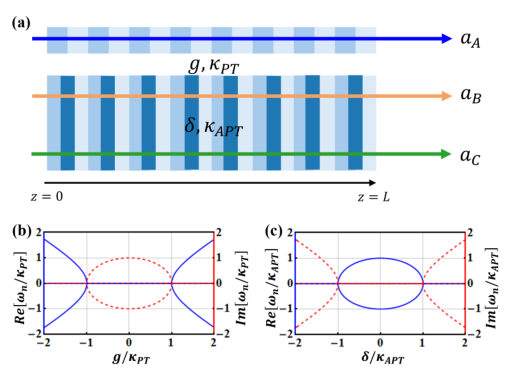
<figcaption class="paper-figure-caption"><b>Fig 1.</b> FIG. 1. (a) Schematic illustration of the hybrid system formed by coupling degenerate phase-sensitive amplification and non-degenerate parametric process through linear inter- action between mode A of the amplification and mode B of amplification and detuned non-degenerate parametric pro- cess. Real (blue solid) and imaginary (red dashed) parts of the eigenvalues ωn for (b) the pure quadrature-PT-symmetry, κAP T , δ = 0, 0, and (c) the pure quadrature-APT-symmetry, κP T , g = 0, 0.</figcaption>
</figure>
<figure class="paper-figure-card">
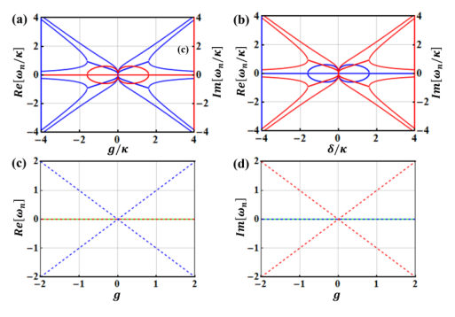
<figcaption class="paper-figure-caption"><b>Fig 2.</b> FIG. 2. Evolution of the eigenspectrum under the combined action of quadrature-PT and quadrature-APT symmetries with κP T = κAP T = κ = 1. Real (blue solid) and imagi- nary (red solid) parts of the eigenvalues ωn are shown for (a) δ = 0 and (b) g = 0, illustrating the intermediate stages of spectral evolution. (c) and (d) show the real and imaginary parts of ωn, respectively, under the balanced condition g = δ, where the Dirac eigenspectrum emerges. The dashed green, blue, and red lines represent the reference spectra ωn = 0, ωn = ±g, and ωn = ±ig, respectively.</figcaption>
</figure>
<figure class="paper-figure-card">
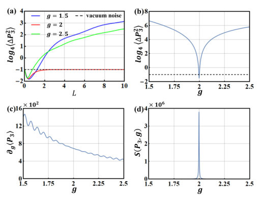
<figcaption class="paper-figure-caption"><b>Fig 3.</b> FIG. 3. Chiral-symmetry-protected quantum fluctuations of the collective three-mode quadrature P3. (a) Variance ⟨∆P 2 3 ⟩ as a function of the evolution length L. (b) Variance ⟨∆P 2 3 ⟩ as a function of the gain parameter g. The black dashed line (log4⟨∆P 2 3 ⟩= −1) denotes the vacuum-noise level. A symmetry-protected vacuum-noise fixed point appears at g = κ = 2, where the squeezing of P3 becomes independent of the evolution length. (b)–(d) are evaluated with L = 100 and κ = 2. (c) Response sensitivity ∂g⟨P3⟩. (d) Quantum sensing sensitivity S(P3, g).</figcaption>
</figure>
</div>

<p><strong>Summary.</strong> This paper proposes a new paradigm for non-Hermitian quantum sensing by exploiting hidden symmetries rather than relying on exceptional points. Using a continuous-variable model unifying PT and APT symmetries, the authors demonstrate that at a symmetry-protected vacuum-noise fixed point, collective quantum noise is actively suppressed below the vacuum level. This results in enhanced quantum sensing sensitivity through noise control, establishing a distinct theoretical route for quantum metrology.</p>
<p><strong>Why it may be interesting.</strong> This work provides a novel theoretical framework for quantum metrology by shifting focus from spectral anomalies (EPs) to fundamental symmetries protecting the vacuum state. It connects topological concepts (hidden symmetry, Dirac spectrum) directly to noise control in open quantum systems, which is highly relevant to AMO and quantum optics.</p>
<details>
<summary>Detailed structure</summary>
<p><strong>Main problem.</strong> To develop a quantum sensing mechanism that surpasses the fundamental limitation of enhanced sensitivity near Exceptional Points (EPs) being accompanied by amplified quantum noise, thereby limiting the Signal-to-Noise Ratio (SNR).</p>
<p><strong>Main result.</strong> The authors propose an alternative paradigm where quantum sensing is enhanced through the symmetry-protected suppression of excess quantum noise, achieved at a hidden symmetry-protected vacuum-noise fixed point (VFP). This mechanism maintains finite response sensitivity while achieving superior SNR compared to conventional EP approaches.</p>
<p><strong>Method.</strong> The study employs a fully quantum continuous-variable model and analyzes the system's eigenspectrum derived from an effective Hamiltonian exhibiting a non-Hermitian Dirac structure. The key diagnostic involves calculating the variance of collective quadratures relative to vacuum noise.</p>
<p><strong>Model / system.</strong> The physical model is a three-mode bosonic system coupling degenerate phase-sensitive amplification and detuned non-degenerate parametric processes, unifying Parity-Time (PT) and Anti-Parity-Time (APT) symmetries. The dynamics are analyzed using Heisenberg–Langevin equations leading to an effective Hamiltonian $H_{eff}$ possessing a hidden chiral symmetry.</p>
<p><strong>Key observables.</strong> Unitless sensitivity $S(O, 	heta)$, collective quadrature variances ($\Delta P_3^2 / 3$), and the identification of the symmetry-protected vacuum-noise fixed point (VFP).</p>
<p><strong>Important parameters / regimes.</strong> Detuning ($\delta$), nonlinear coupling ($\kappa_{PT}$), amplification gain ($g$), and linear coupling ($\kappa_{APT}$). The critical regime is defined by balancing these symmetries.</p>
<p><strong>Assumptions / limitations.</strong> The analysis assumes the system can be realized on an integrated photonic platform, maintaining standard bosonic commutation relations without needing to explicitly include additional Langevin noise terms in the Heisenberg equations.</p>
<p><strong>Figures summary.</strong> Figures illustrate the evolution of the non-Hermitian Dirac eigenspectrum under balanced symmetries and show that the quantum fluctuation variance ($\Delta P_3^2 / 3$) is squeezed below vacuum noise at the symmetry-protected point, while sensitivity metrics peak there.</p>
<p><strong>Paper structure.</strong> The paper first establishes the problem with EPs. It then develops a unified PT/APT continuous-variable model and analyzes its non-Hermitian Dirac eigenspectrum. The core of the work involves demonstrating that at a specific hidden symmetry-protected point, quantum noise is suppressed (VFP), leading to enhanced sensing performance distinct from EP enhancement.</p>
</details>
<details>
<summary>Abstract</summary>
<p>Exceptional-point (EP) sensing has attracted considerable interest because of its anomalous response scaling. However, recent studies have shown that the enhanced response near an EP is inevitably accompanied by amplified quantum noise, fundamentally limiting the achievable signalto-noise ratio (SNR). Here, we propose a fundamentally different route toward non-Hermitian quantum sensing based on symmetry-protected noise suppression rather than response amplification. We develop a fully quantum continuous-variable model that unifies parity-time (PT) and anti-paritytime(APT) symmetries within a single framework. Exploiting the incompatibility between these two symmetries, we uncover a non-Hermitian Dirac eigenspectrum and reveal a hidden symmetryprotected phase transition embedded in the Hamiltonian spectrum. Remarkably, this hidden phasetransition simultaneously constitutes a symmetry-protected vacuum-noise fixed point, where collective three-mode quadratures exhibit suppressed quantum fluctuations despite the absence of any anomalous spectral response. As a consequence, quantum sensing is enhanced through the suppression of excess quantum noise while maintaining a finite response sensitivity, establishing a sensing mechanism fundamentally different from conventional EP-based approaches. These results reveal an unexpected connection between hidden symmetry, quantum fluctuations, and non-Hermitian quantum metrology, and establish noise suppression as an alternative paradigm for non-Hermitian quantum sensing.</p>
</details>
<p><sub><a href="#top">↑ back to top</a></sub></p>

<p><a id="paper-2607.19097"></a></p>
<h3 id="quasi-non-hermitian-edge-bursts-induced-by-nonuniform-loss"><a href="http://arxiv.org/abs/2607.19097v1">Quasi-Non-Hermitian Edge Bursts Induced by Nonuniform Loss</a></h3>
<p><strong>Authors:</strong> Ze Yang, Wei Li, Fuxiang Li<br>
<strong>Type:</strong> theory · <strong>Category:</strong> other · <strong>PDF:</strong> <a href="https://arxiv.org/pdf/2607.19097v1">https://arxiv.org/pdf/2607.19097v1</a><br>
<strong>Analysis basis:</strong> full PDF text, analyzed in chunks
<strong>Topic relevance:</strong> <code>correlated / nonlocal dissipation</code> <strong>3/5</strong> · <code>driven-dissipative phase transition</code> <strong>3/5</strong> · <code>methods for driven-dissipative</code> <strong>3/5</strong> · <code>non-equilibrium dynamics</code> <strong>3/5</strong> · <code>non-equilibrium universality</code> <strong>2/5</strong> · <code>Kondo &amp; dissipative impurity</code> <strong>1/5</strong> · <code>scars &amp; prethermalization</code> <strong>1/5</strong></p>
<div class="figure-strip-hint">↔ Scroll figures horizontally</div>
<div class="paper-figures-scroll">
<figure class="paper-figure-card">
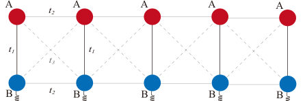
<figcaption class="paper-figure-caption"><b>Fig 1.</b> FIG. 1. Schematic of a finite tight-binding lattice chain with two sublattices. Loss is introduced only on the B- sublattice (blue sites), with site-dependent strengths γx = {γ1, γ2, . . . , γL}, where L is the total number of unit cells. The system exhibits the NHSE, originating from the inter- play between sublattice-selective loss and magnetic flux.</figcaption>
</figure>
<figure class="paper-figure-card">
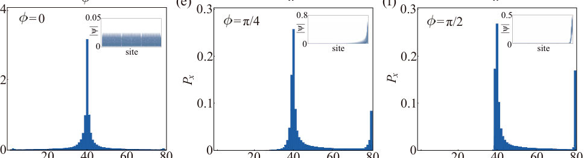
<figcaption class="paper-figure-caption"><b>Fig 2.</b> FIG. 2. (a) For the uniform-loss case, mean inverse participation ratio (MIPR) as a function of magnetic flux ϕ. The horizontal reference MIPR ≈0.018 corresponds to the absence of the NHSE. In this panel, blue, green, purple, and red curves correspond to uniform loss strengths γ0 = 1, 2, 5, and 10, respectively. (b)–(f) Spatial distributions of the loss probability Px as a function of lattice site x for the uniform loss model, with γ0 = 1. Panels (b)–(f) correspond to magnetic flux values ϕ = −π/2, −π/4, 0, π/4, π/2, respectively. The initial position of the quantum walker is x0 = 40. Each panel includes an inset showing the probability density of eigenstates under the corresponding flux....</figcaption>
</figure>
<figure class="paper-figure-card">
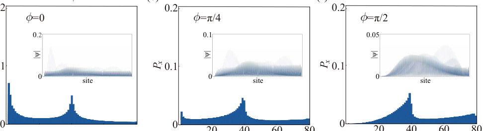
<figcaption class="paper-figure-caption"><b>Fig 3.</b> FIG. 3. (a) For the nonuniform loss model, mean inverse participation ratio (MIPR) as a function of magnetic flux ϕ. The horizontal reference MIPR ≈0.018 indicates the absence of the NHSE. In this panel, blue, green, purple, and red curves correspond to loss gradients γ = 1, 2, 5, and 10, respectively. (b)–(f) Spatial distributions of the loss probability Px as a function of lattice site x for the nonuniform loss model, with γ = 1. Panels (b)–(f) correspond to magnetic flux values ϕ = −π/2, −π/4, 0, π/4, π/2, respectively. The initial position of the quantum walker is x0 = 40. Each panel contains an inset showing the probability density distributions of eigenstates corresponding to energy...</figcaption>
</figure>
<figure class="paper-figure-card">
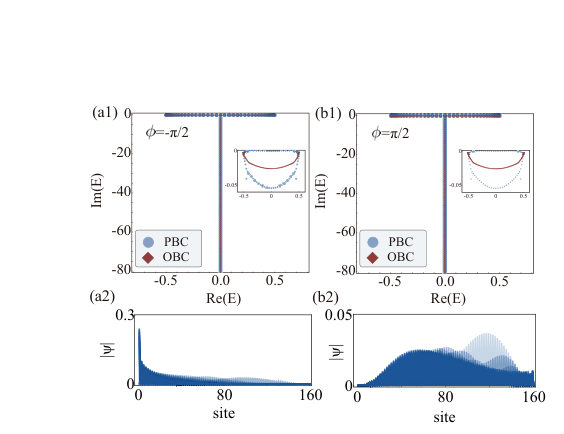
<figcaption class="paper-figure-caption"><b>Fig 4.</b> FIG. 4. Complex energy spectra of the nonuniform loss model for (a1) ϕ = −π/2 and (b1) ϕ = π/2. Red dia- monds and blue circles denote spectra under open and pe- riodic boundary conditions, respectively. The insets in pan- els (a1) and (b1) show enlarged views of the complex energy spectrum in the vicinity of the real axis. (a2) and (b2) show the eigenstate probability density distributions correspond- ing to energy levels near the real axis for the ϕ = −π/2 and ϕ = π/2, respectively. System parameters are γ = 1, t1 = 0.4, t2 = 0.25, t3 = 0.25, and L = 80.</figcaption>
</figure>
<figure class="paper-figure-card">
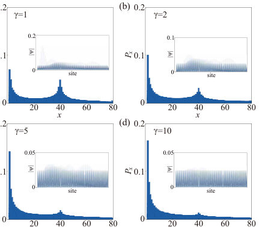
<figcaption class="paper-figure-caption"><b>Fig 5.</b> FIG. 5. Spatial distributions of the loss probability Px for the nonuniform loss model at zero magnetic flux (ϕ = 0). Panels (a)–(d) correspond to γ = 1, 2, 5, 10, respectively. All panels include insets showing eigenstate probability densities corresponding to energy levels near the real axis of the com- plex spectrum. The initial position of the quantum walker is x0 = 40, and system parameters are t1 = 0.4, t2 = 0.25, t3 = 0.25, and L = 80.</figcaption>
</figure>
</div>

<p><strong>Summary.</strong> The paper explores non-Hermitian quantum walks on lattices with spatially varying dissipation. It introduces the concept of a quasi-NHEB, demonstrating that nonuniform loss alone can create anomalous boundary loss accumulation even without the Non-Hermitian Skin Effect. This highlights that structured dissipation offers an independent and powerful control mechanism for engineering edge physics.</p>
<p><strong>Why it may be interesting.</strong> This work provides a generalized framework for understanding boundary effects beyond standard topological invariants, showing how engineered disorder (nonuniform loss) can independently induce robust edge phenomena.</p>
<details>
<summary>Detailed structure</summary>
<p><strong>Main problem.</strong> The study investigates non-Hermitian boundary phenomena, specifically how spatially nonuniform loss influences the Non-Hermitian Edge Burst (NHEB) in quantum walks.</p>
<p><strong>Main result.</strong> Spatially nonuniform loss alone can generate a quasi-non-Hermitian edge burst ($   ext{quasi-NHEB}$) even when the system lacks the Non-Hermitian Skin Effect (NHSE).</p>
<p><strong>Method.</strong> The analysis involves simulating quantum walker dynamics on a tight-binding lattice, calculating the boundary loss probability ($P_x$), and comparing scaling relations between different non-Hermiticity regimes.</p>
<p><strong>Model / system.</strong> The model is a one-dimensional non-Hermitian tight-binding chain with two coupled sublattices (A and B). Non-Hermiticity arises from imaginary on-site loss ($\gamma_x$) on sublattice B, which can be made spatially nonuniform and influenced by an artificial magnetic flux ($\phi$).</p>
<p><strong>Key observables.</strong> Loss probability distribution ($P_x$), Mean Inverse Participation Ratio ($   ext{MIPR}$), Non-Hermitian Edge Burst (NHEB) magnitude, and the dependence of boundary loss on initial position ($x_0$).</p>
<p><strong>Important parameters / regimes.</strong> Magnetic flux ($\phi$), spatial gradient/variation of loss ($\gamma_x$), and the comparison between uniform vs. nonuniform loss regimes.</p>
<p><strong>Assumptions / limitations.</strong> The analysis relies on open boundary conditions for the quantum walk, and it distinguishes between phenomena driven by NHSE versus those driven purely by inhomogeneous dissipation.</p>
<p><strong>Figures summary.</strong> Figures illustrate the schematic lattice setup with site-dependent loss; they show $   ext{MIPR}$ vs. flux to diagnose NHSE, and spatial maps of the loss probability ($P_x$) comparing uniform, quasi-, and conventional edge bursts under varying fluxes and loss gradients.</p>
<p><strong>Paper structure.</strong> The paper systematically investigates three regimes: (i) Quasi-NHEB induced by nonuniform loss at zero flux ($\phi=0$); (ii) Hybrid NHEB resulting from the interplay of NHSE and nonuniform loss ($\phi=-\pi/2$); and (iii) Comparison against the conventional NHEB found in uniform loss models. The structure builds the argument that dissipation gradient is a key control parameter.</p>
</details>
<details>
<summary>Abstract</summary>
<p>Non-Hermitian quantum walks on lossy lattices with open boundaries can exhibit an anomalous peak of the loss probability at the boundary, known as the non-Hermitian edge burst (NHEB). This phenomenon has been attributed to the combined effect of the non-Hermitian skin effect (NHSE) and a gapless imaginary spectrum. Here we investigate a class of models in which the NHSE is induced by magnetic flux while the loss is spatially nonuniform. We show that the spatial distribution of loss plays a crucial role in determining the emergence and strength of the NHEB. Notably, even in the absence of the NHSE, a weak boundary accumulation of the loss probability persists. We term this effect a quasi-non-Hermitian edge burst (quasi-NHEB). By analyzing the dependence of the loss probability on the initial position, we further demonstrate that the quasi-NHEB obeys a bulk-edge scaling relation distinct from that of conventional NHEB. Our results show that spatially nonuniform loss alone can generate boundary-localized loss anomalies even without the NHSE, providing new insight into non-Hermitian boundary phenomena and a broader platform for their exploration and potential applications.</p>
</details>
<p><sub><a href="#top">↑ back to top</a></sub></p>

<p><a id="paper-2607.19142"></a></p>
<h3 id="the-arrow-of-time-irreversibility-equilibrium-and-measurement-in-quantum-mechanics"><a href="http://arxiv.org/abs/2607.19142v1">The arrow of time, irreversibility, equilibrium and measurement in quantum mechanics</a></h3>
<p><strong>Authors:</strong> Christopher J. N. Coveney, Peter V. Coveney<br>
<strong>Type:</strong> theory · <strong>Category:</strong> statistical mechanics · <strong>PDF:</strong> <a href="https://arxiv.org/pdf/2607.19142v1">https://arxiv.org/pdf/2607.19142v1</a><br>
<strong>Analysis basis:</strong> full PDF text, analyzed in chunks
<strong>Topic relevance:</strong> <code>non-equilibrium dynamics</code> <strong>3/5</strong> · <code>driven-dissipative phase transition</code> <strong>2/5</strong> · <code>measurement-induced transitions</code> <strong>2/5</strong> · <code>quantum measurements</code> <strong>2/5</strong> · <code>Keldysh / 2PI / non-Gaussian methods</code> <strong>1/5</strong> · <code>correlated / nonlocal dissipation</code> <strong>1/5</strong> · <code>entanglement &amp; information structure</code> <strong>1/5</strong> · <code>methods for driven-dissipative</code> <strong>1/5</strong> · <code>non-equilibrium universality</code> <strong>1/5</strong></p>
<div class="figure-strip-hint">↔ Scroll figures horizontally</div>
<div class="paper-figures-scroll">
<figure class="paper-figure-card">
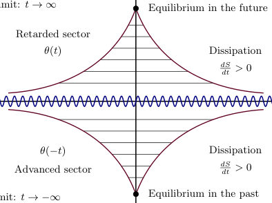
<figcaption class="paper-figure-caption"><b>Fig 1.</b> FIG. 1: (a) Asymptotic approach to equilibrium due to the dissipative dynamics contained in mixing systems that possess a branch cut structure in the resolvent of the Liouvillian. The second law of thermodynamics breaks the time symmetry of the solution, requiring entropic increase such that equilibrium is obtained in the future. Therefore, the retarded sector corresponds to the physical solution and the advanced sector can be safely discarded. (b) Analytic continuation of GA(z) from the physical sheet (Sheet I) to the second Riemann sheet (Sheet II) GII A(z) by traveling through the branch cut from above. The invariant measure appears on the second Riemann sheet along with the...</figcaption>
</figure>
</div>

<p><strong>Summary.</strong> This paper resolves apparent conflicts between unitary quantum mechanics and the second law of thermodynamics by analyzing the system in the thermodynamic limit. It demonstrates that time-reversal symmetry breaks down naturally, leading to irreversible entropy increase and decoherence. This framework successfully derives the Born rule from fundamental principles governing large quantum systems.</p>
<p><strong>Why it may be interesting.</strong> This work provides a deep theoretical framework connecting fundamental quantum dynamics (unitary evolution) to macroscopic irreversibility and equilibrium states, which is central to open quantum systems theory and non-equilibrium statistical mechanics.</p>
<details>
<summary>Detailed structure</summary>
<p><strong>Main problem.</strong> The paper addresses quantum mechanics' perceived incompleteness regarding the second law of thermodynamics and the physical mechanism behind measurement-induced decoherence.</p>
<p><strong>Main result.</strong> It shows that in the thermodynamic limit, time-reversal symmetry breaks down naturally, leading to irreversible evolution, entropy increase, and a recovery of classical statistical mechanical predictions like the Born rule.</p>
<p><strong>Method.</strong> The analysis uses advanced mathematical techniques involving the Liouville-von Neumann equation, spectral theory (analyzing the Liouvillian spectrum), and comparing time limits ($\lim_{t	o\infty}\lim_{N,V	o\infty}$ vs. $\lim_{N,V	o\infty}\lim_{t	o\infty}$).</p>
<p><strong>Model / system.</strong> The focus is on isolated quantum systems in the thermodynamic limit, analyzed via their time evolution governed by the Liouvillian superoperator.</p>
<p><strong>Key observables.</strong> Entropy increase, loss of quantum coherence (pure to mixed states), and the relaxation dynamics described by Lyapunov functionals ($H_t$).</p>
<p><strong>Important parameters / regimes.</strong> The thermodynamic limit ($  ext{N},     ext{V}  o \infty$), time $t$, and inverse temperature $eta$.</p>
<p><strong>Assumptions / limitations.</strong> The theory requires studying systems with absolutely continuous spectra to exhibit the necessary irreversible dynamics; finite systems are subject to Poincaré recurrence.</p>
<p><strong>Paper structure.</strong> The paper progresses by first identifying the conflict between QM and thermodynamics, then mathematically demonstrating how time-asymmetry emerges in the thermodynamic limit via spectral analysis of the Liouvillian, culminating in a description of measurement collapse consistent with statistical mechanics.</p>
</details>
<details>
<summary>Abstract</summary>
<p>Quantum mechanics is widely recognised as being incomplete. It is not consistent with the second law of thermodynamics and does not provide a scientifically credible physical account of the measurement process, the means by which coherence is broken and classically observable states are recorded. This had led to many ad hoc assumptions being used to account for various properties of quantum systems, among which is the coherence time of quantum devices that determines their ability to perform computations. Here, we show that all these properties can be accommodated naturally and consistently in the context of quantum systems which exhibit continuous spectra, as arises in the thermodynamic limit of large systems. In particular, for isolated systems we show that the time-reversal symmetry associated with unitary time evolution of the quantum state gives rise to time-symmetry breaking and a semi-group evolution which attains thermodynamic equilibrium at long times. Moreover, the emergence of this non-unitary time-asymmetry leads to microcanonical equilibrium states in which all quantum coherence is lost and is accompanied by the transformation of pure states into mixtures, leading in turn to an increase in entropy. Inclusion of a macroscopic measurement apparatus shows how the outcome of a measurement corresponds to the von Neumann projection postulate, arising with probabilities in conformance with the Born rule. The mathematical structure of the theory which applies to quantum systems with continuous spectra is closely analogous to the classical ergodic theory of dynamical systems and the conditions under which they attain equilibrium states.</p>
</details>
<p><sub><a href="#top">↑ back to top</a></sub></p>

<p><a id="paper-2607.18388"></a></p>
<h3 id="information-compression-at-criticality"><a href="http://arxiv.org/abs/2607.18388v1">Information Compression at Criticality</a></h3>
<p><strong>Authors:</strong> Simon Jiricek, Miroslav Hopjan, Boris Altshuler, Vladimir Kravtsov, Lev Vidmar<br>
<strong>Type:</strong> theory · <strong>Category:</strong> disordered systems and neural networks · <strong>PDF:</strong> <a href="https://arxiv.org/pdf/2607.18388v1">https://arxiv.org/pdf/2607.18388v1</a><br>
<strong>Analysis basis:</strong> full PDF text, analyzed in chunks
<strong>Topic relevance:</strong> <code>non-equilibrium universality</code> <strong>3/5</strong> · <code>driven-dissipative phase transition</code> <strong>2/5</strong> · <code>entanglement &amp; information structure</code> <strong>2/5</strong> · <code>scars &amp; prethermalization</code> <strong>2/5</strong> · <code>Kondo &amp; dissipative impurity</code> <strong>1/5</strong> · <code>analog quantum simulation</code> <strong>1/5</strong> · <code>methods for driven-dissipative</code> <strong>1/5</strong> · <code>non-equilibrium dynamics</code> <strong>1/5</strong></p>
<div class="figure-strip-hint">↔ Scroll figures horizontally</div>
<div class="paper-figures-scroll">
<figure class="paper-figure-card">
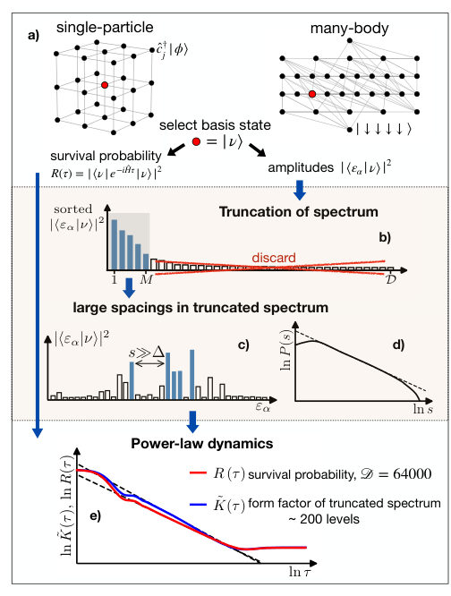
<figcaption class="paper-figure-caption"><b>Fig 1.</b> FIG. 1. Sketch of the truncation procedure. (a) We select a basis state |ν⟩, corresponding to a single lattice site for the single-particle models or a specific qubit configuration for the many-body models. (b) We truncate the spectrum based on the amplitudes of the selected basis state by keeping only the M largest contributions to the wavefunction, see the main text for details. In (c) we sketch how large spacings appear in the truncated spectrum giving rise to (d) a power-law distri- bution of spacings. (e) The truncated SFF ˜K(τ), see Eq. (3), shows that the information about a power-law decay of R(τ) is contained, for each basis state, in a vanishing fraction of energy levels.</figcaption>
</figure>
<figure class="paper-figure-card">
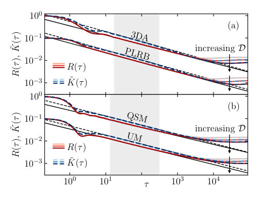
<figcaption class="paper-figure-caption"><b>Fig 2.</b> FIG. 2. Comparison of the survival probability R(τ) [red solid lines] and the truncated SFF ˜K(τ) [blue dashed lines]. (a) The 3d Anderson Model (3DA) for D = 263, 323, 403</figcaption>
</figure>
<figure class="paper-figure-card">
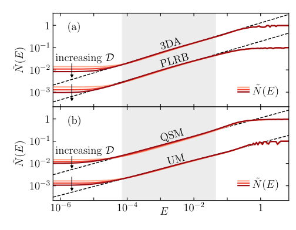
<figcaption class="paper-figure-caption"><b>Fig 3.</b> FIG. 3. Box counting method in the truncated spectrum. (a) The 3d Anderson Model (3DA) for D = 263, 323, 403</figcaption>
</figure>
<figure class="paper-figure-card">
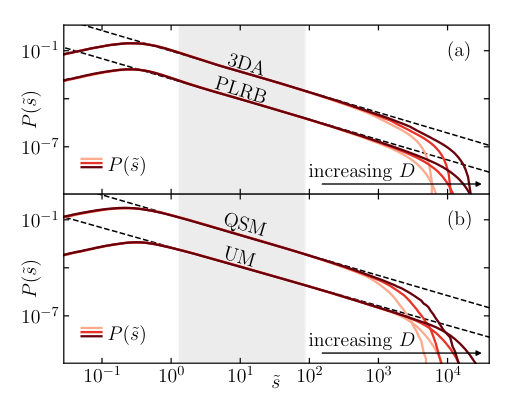
<figcaption class="paper-figure-caption"><b>Fig 4.</b> FIG. 4. Distributions P of level spacings ˜s of the trun- cated spectrum. (a) The 3d Anderson Model (3DA) for D = 263, 323, 403 and the power-law random banded model (PLRB) for D = 16k, 32k, 64k, (b) the quantum sun model (QSM) and the ultrametric model (UM), both for D = 214, 215, 216. Increasing Hilbert-space dimension is indicated by the arrows and deeper colors. The data for different mod- els is shifted by a factor of 100. We carry out power-law fits in the shaded region to the function P(˜s) ∝˜s −(1+ ˜ ∆2) [black dashed lines]. For the 3dA, PLRB, QSM and UM, respec- tively, we obtain the exponents ˜∆2 = 0.28, 0.27, 0.26, 0.22.</figcaption>
</figure>
<figure class="paper-figure-card">
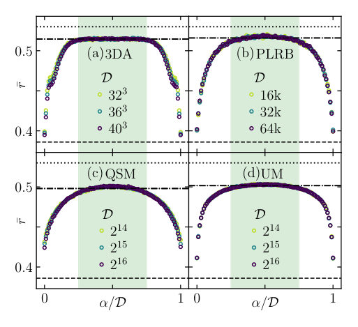
<figcaption class="paper-figure-caption"><b>Fig 5.</b> FIG. 5. Gap ratio in the global spectrum without trunca- tion. The green shaded area indicates the 50% of states we regard as critical states, the rest posing the mobility edge. The dotted lines indicate the GOE value rGOE ≈0.53, while the Poisson value rPoisson ≈0.386 is indicated by dashed lines. The dash-dotted lines correspond to the average gap ratio in the green shaded area. All results are averaged over different disorder realizations. Results are displayed for (a) the 3d An- derson Model, (b) the Power-law random banded model, (c) the Quantum sun model, (d) the Ultrametric model.</figcaption>
</figure>
</div>

<p><strong>Summary.</strong> The paper develops a method based on intrinsic information compression to study quantum dynamics at criticality in various disordered models. By truncating the Hamiltonian spectrum to only essential energy levels, the authors show that the resulting simplified description accurately predicts key dynamical observables like the survival probability decay. This establishes energy-space compression as a fundamental principle governing critical behavior.</p>
<p><strong>Why it may be interesting.</strong> This work provides a powerful theoretical tool—energy-space compression—to analyze complex quantum dynamics near critical points in disordered systems, offering insights applicable to many condensed matter problems where full diagonalization is impossible.</p>
<details>
<summary>Detailed structure</summary>
<p><strong>Main problem.</strong> The study aims to understand quantum dynamics at the critical boundary of ergodicity, where highly excited states deviate from thermal behavior, by finding efficient ways to describe their complex energy space.</p>
<p><strong>Main result.</strong> The power-law decay of the survival probability at criticality can be accurately reproduced using only a vanishing fraction of the total Hamiltonian eigenlevels, establishing intrinsic information compression in energy space.</p>
<p><strong>Method.</strong> The core method involves an intrinsic information compression technique applied to the energy spectrum, where dynamics are approximated by truncating the Hamiltonian basis to include only the most significant eigenstates.</p>
<p><strong>Model / system.</strong> The research investigates various quantum many-body systems exhibiting ergodicity breaking transitions, including the 3D Anderson model (3DA), Power-law Random Banded Model (PLRB), Quantum Sun Model (QSM), and Ultrametric Model (UM).</p>
<p><strong>Key observables.</strong> Survival Probability $R(	au)$, Spectral Form Factor (SFF) $ ilde{K}(    au)$, Wavefunction Fractal Dimension ($d_2$), and the level-spacing distribution exponent ($\Delta_2$).</p>
<p><strong>Important parameters / regimes.</strong> The critical exponents, such as $d'_2$ and $   ilde{\delta}_2$, are key; the analysis focuses on the thermodynamic limit where the fraction of retained levels vanishes.</p>
<p><strong>Assumptions / limitations.</strong> It is assumed that the dynamics can be effectively captured by a small subset of energy eigenstates (intrinsic information compression), and localized states at spectral edges must be filtered out to reveal true critical behavior.</p>
<p><strong>Figures summary.</strong> Figures illustrate the agreement between $R(	au)$ and $ ilde{K}(    au)$ via power-law decay, show the fractal nature ($    ilde{\delta}_2 &lt; 1$) of the truncated spectrum, and map out gap ratios distinguishing localized, delocalized, and critical states.</p>
<p><strong>Paper structure.</strong> The paper systematically analyzes multiple disordered models (3DA, PLRB, QSM, UM) by first identifying spectral edges containing localized states. It then applies energy-space truncation to filter these edges, demonstrating that the resulting truncated Spectral Form Factor accurately mimics the power-law decay of the survival probability at criticality.</p>
</details>
<details>
<summary>Abstract</summary>
<p>Highly excited quantum states at the critical boundary of ergodicity are known to deviate from thermal behavior, yet their dynamical properties remain poorly understood. Here, we uncover the complexity of quantum dynamics at criticality through the lens of intrinsic information compression in energy space. We show that the Hamiltonian spectrum can be systematically truncated, yielding a simplified description of the dynamics while preserving its essential features. Specifically, for both interacting and noninteracting systems, we demonstrate that a vanishing fraction of Hamiltonian eigenlevels suffices to reproduce the power-law decay of the survival probability. The resulting truncated spectrum exhibits a fractal structure characterized by a level-spacing distribution with a power-law tail, while its spectral form factor displays the same asymptotic power-law decay as the survival probability.</p>
</details>
<p><sub><a href="#top">↑ back to top</a></sub></p>

<p><a id="paper-2607.18617"></a></p>
<h3 id="spontaneous-optical-emission-of-a-randomly-oriented-chiral-quantum-source"><a href="http://arxiv.org/abs/2607.18617v1">Spontaneous optical emission of a randomly oriented chiral quantum source</a></h3>
<p><strong>Authors:</strong> Mikael P. Backlund<br>
<strong>Type:</strong> theory · <strong>Category:</strong> other · <strong>PDF:</strong> <a href="https://arxiv.org/pdf/2607.18617v1">https://arxiv.org/pdf/2607.18617v1</a><br>
<strong>Analysis basis:</strong> full PDF text, analyzed in chunks
<strong>Topic relevance:</strong> <code>free-space correlated emission</code> <strong>3/5</strong> · <code>interference shaping light</code> <strong>3/5</strong> · <code>correlated / nonlocal dissipation</code> <strong>2/5</strong> · <code>Dicke superradiance</code> <strong>1/5</strong> · <code>Keldysh / 2PI / non-Gaussian methods</code> <strong>1/5</strong> · <code>driven-dissipative phase transition</code> <strong>1/5</strong> · <code>methods for driven-dissipative</code> <strong>1/5</strong> · <code>superradiant laser</code> <strong>1/5</strong></p>
<div class="figure-strip-hint">↔ Scroll figures horizontally</div>
<div class="paper-figures-scroll">
<figure class="paper-figure-card">

<figcaption class="paper-figure-caption"><b>Fig 1.</b> FIG. 1. (a) Illustration of the model. We consider the spheri- cally symmetric field due to a randomly oriented chiral quan- tum emitter, here depicted as a tumbling helix. (b) Lab-frame coordinate definitions, with wavevector k. The unit vectors e  ˆk1  , e  ˆk2  , and ˆk form a right-handed triad.</figcaption>
</figure>
<figure class="paper-figure-card">
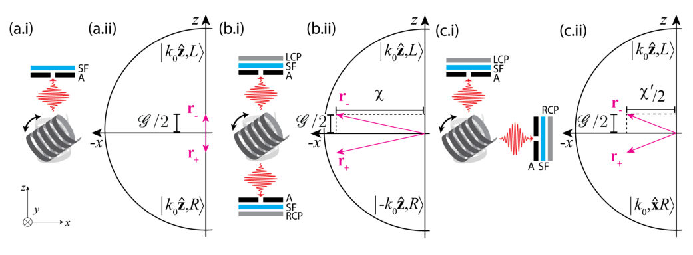
<figcaption class="paper-figure-caption"><b>Fig 2.</b> FIG. 2. Filtered collection from one (a.i) or two (b.i), (c.i) directions. A: aperture, SF: spectral filter, LCP/RCP: left/right- circular polarizer. (a.ii), (b.ii), and (c.ii) sketch the Bloch vectors r± for the qubit states described in the main text, assuming χ, χ′, G &gt; 0.</figcaption>
</figure>
<figure class="paper-figure-card">
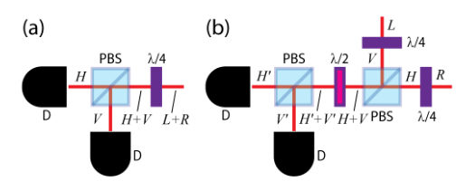
<figcaption class="paper-figure-caption"><b>Fig 3.</b> FIG. 3. Detection schemes. (a) The conventional approach to chiroptical detection. A single spatial mode containing both L- and R-polarized light is transmitted through a quar- ter wave plate (λ/4), converting one circular polarization to horizontally polarized light (H) and the other to vertically polarized light (V ). The polarization channels are split by a polarizing beam splitter (PBS) and photons are counted on the detectors (D). (b) Coherent detection of chiroptical emis- sion collected from two different spatial modes, as in Fig. 2b, c. L-polarized light from one spatial mode and R-polarized light from another are converted to H and V with quarter wave plates then coherently...</figcaption>
</figure>
</div>

<p><strong>Summary.</strong> This theoretical paper derives the quantum state of light emitted from randomly oriented chiral sources, accounting for electric dipole, magnetic dipole, and quadrupole contributions. It shows that measuring correlations between photons collected in different directions or polarizations allows experimental separation of these underlying physical coupling parameters. This advances understanding of symmetry breaking in spontaneous emission.</p>
<p><strong>Why it may be interesting.</strong> This work provides a rigorous quantum optical framework for characterizing chiral emitters by exploiting spatial coherence, which is crucial for understanding fundamental symmetries in light-matter interactions beyond simple dipole approximations.</p>
<details>
<summary>Detailed structure</summary>
<p><strong>Main problem.</strong> The paper derives the quantum state of light emitted via spontaneous optical emission from a randomly oriented chiral source, aiming to characterize the multipolar nature ($\mu, m, Q$) of this emission.</p>
<p><strong>Main result.</strong> By analyzing spatial coherence and collecting photons in specific polarization/direction combinations (e.g., opposite directions), one can isolate parameters related to electric dipole, magnetic dipole, and quadrupole moments.</p>
<p><strong>Method.</strong> The analysis uses quantum electrodynamics formalism, deriving density matrices ($ar{
ho}$) for the emitted photon state by averaging over random source orientations and projecting onto specific polarization/propagation modes.</p>
<p><strong>Model / system.</strong> The system is a quantum emitter (modeled as a two-level system) undergoing spontaneous emission into the electromagnetic field. The interaction Hamiltonian includes electric dipole, magnetic dipole, and electric quadrupole terms.</p>
<p><strong>Key observables.</strong> The one-photon state density operator ($ar{
ho}$), which depends on polarization basis states (L/R circular polarization) and collection directions ($\hat{z}, \hat{x}$).</p>
<p><strong>Important parameters / regimes.</strong> Unitless parameters $\epsilon_\mu, \epsilon_m, \epsilon_Q$ characterizing the relative strengths of dipole, magnetic dipole, and quadrupole contributions.</p>
<p><strong>Assumptions / limitations.</strong> The emitter is treated as a two-level system; rotational averaging is performed over all source orientations; approximations are made in the continuum limit for quadrupole terms.</p>
<p><strong>Figures summary.</strong> Figures illustrate collection geometries using polarizers and apertures, showing how measurements can be restricted to specific polarization/direction combinations (e.g., opposite $\hat{z}$ propagation).</p>
<p><strong>Paper structure.</strong> The paper progresses from deriving the general one-photon state ($
ho$) including all multipoles, simplifying this for random orientation averages, and finally developing measurement protocols using circular polarizations and directional correlations to separate the underlying physical parameters.</p>
</details>
<details>
<summary>Abstract</summary>
<p>We derive the form of the one-photon state of the electromagnetic field resulting from spontaneous optical emission of a randomly oriented chiral quantum source, including electric dipole, magnetic dipole, and electric quadrupole contributions to the radiation. We describe how spatial coherence in the emission can be exploited to reveal hidden information about the emitter. This work serves as a prelude and companion piece to our concurrently submitted work \cite{Backlund2026Letter} in which we present the classical and quantum error bounds associated with assigning the handedness of such an emitter.</p>
</details>
<p><sub><a href="#top">↑ back to top</a></sub></p>

<p><a id="paper-2607.18537"></a></p>
<h3 id="state-math410math-designs-from-hamiltonian-evolution"><a href="http://arxiv.org/abs/2607.18537v1">State $k$-designs from Hamiltonian evolution</a></h3>
<p><strong>Authors:</strong> Shengxian Hou, Zong-Yue Hou, Zhi-Cheng Yang<br>
<strong>Type:</strong> theory · <strong>Category:</strong> statistical mechanics · <strong>PDF:</strong> <a href="https://arxiv.org/pdf/2607.18537v1">https://arxiv.org/pdf/2607.18537v1</a><br>
<strong>Analysis basis:</strong> full PDF text, analyzed in chunks
<strong>Topic relevance:</strong> <code>non-equilibrium dynamics</code> <strong>3/5</strong> · <code>analog quantum simulation</code> <strong>2/5</strong> · <code>entanglement &amp; information structure</code> <strong>2/5</strong> · <code>non-equilibrium universality</code> <strong>2/5</strong> · <code>Keldysh / 2PI / non-Gaussian methods</code> <strong>1/5</strong> · <code>driven-dissipative phase transition</code> <strong>1/5</strong> · <code>methods for driven-dissipative</code> <strong>1/5</strong> · <code>scars &amp; prethermalization</code> <strong>1/5</strong></p>
<div class="figure-strip-hint">↔ Scroll figures horizontally</div>
<div class="paper-figures-scroll">
<figure class="paper-figure-card">
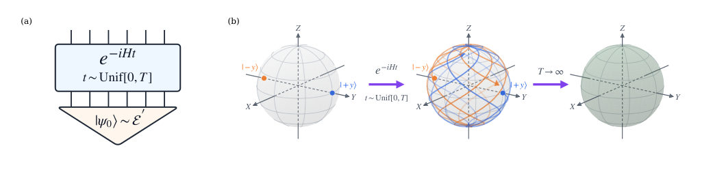
<figcaption class="paper-figure-caption"><b>Fig 1.</b> FIG. 1. (a) The setup considered in this work, E = {e−iHt |ψ0⟩| t ∼Unif[0, T], |ψ0⟩∼E′}. (b) Illustration of the formation of state designs under Hamiltonian evolution. Each initial state in E′ generates a trajectory in the Hilbert space visualized on a Bloch sphere. In the long-time limit, these trajectories cover the Hilbert space uniformly and the evolved ensemble E forms a state k-design.</figcaption>
</figure>
<figure class="paper-figure-card">
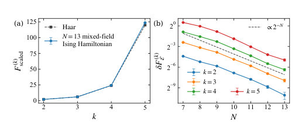
<figcaption class="paper-figure-caption"><b>Fig 2.</b> FIG. 2. (a) The scaled frame potential F (k) scaled := D(D + 1) · · · (D + k −1)F (k) E for the ensemble E = {e−iHt |y⟩| t ∼Unif[0, T], |y⟩∼Y -basis} in the limit T →∞, where H is the mixed-field Ising Hamiltonian (8) with parameters (J, hx, hz) = (1, 0.9045, 0.809) and system size N = 13. The black dots indicate the Haar values k!. (b) The relative error compared to the Haar ensemble δF (k) E := (F (k) E −F (k) Haar)/F (k) Haar for different N and k, which shows exponential convergence upon increasing system sizes.</figcaption>
</figure>
<figure class="paper-figure-card">
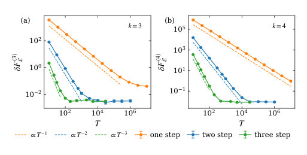
<figcaption class="paper-figure-caption"><b>Fig 3.</b> FIG. 3. The relative error compared to the Haar ensemble δF (k) E at different values of T for one-, two- and three-step quenches for k = 3, 4. The initial ensemble E′ is chosen as the Y -basis. For multiple quenches, we use two mixed- field Ising Hamiltonians (8) with parameters (J, hx, hz) = (1, 0.9045, 0.809) for H1 and (J, hx, hz) = (1, −1.05, 0.5) for H2. We take system size N = 10. The three dashed lines are proportional to T −1, T −2 and T −3 respectively.</figcaption>
</figure>
</div>

<p><strong>Summary.</strong> This work theoretically analyzes how time evolution under a Hamiltonian can generate state k-designs, which are quantum states exhibiting maximal randomness. Using the frame potential as a diagnostic tool, the authors derive scaling relations and propose efficient M-step quench protocols to suppress finite-time errors. This provides a unified framework for understanding design generation in both random matrix theory settings and physically relevant local Hamiltonians.</p>
<p><strong>Why it may be interesting.</strong> The connection between quantum dynamics (Hamiltonian evolution) and achieving highly random states (state $k$-designs) is fundamental to understanding thermalization and scrambling in many-body systems. The explicit derivation of quench protocols provides concrete tools for experimental realization.</p>
<details>
<summary>Detailed structure</summary>
<p><strong>Main problem.</strong> The paper investigates the conditions under which time evolution generated by a Hamiltonian can produce an ensemble that approximates a state $k$-design, a property related to maximal randomness.</p>
<p><strong>Main result.</strong> It derives relations showing that for GUE Hamiltonians, generating state $k$-designs requires only that the initial state ensemble forms a state 1-design. Furthermore, it proposes quench protocols to suppress finite-time errors exponentially.</p>
<p><strong>Method.</strong> The analysis heavily relies on calculating and analyzing the 'frame potential' ($F^{(k)}_E$) for both state and unitary ensembles, using techniques involving Weingarten calculus and recursion relations derived from moment matching.</p>
<p><strong>Model / system.</strong> The study considers quantum systems evolving under a fixed Hamiltonian $H$, initially modeled by Hamiltonians drawn from the Gaussian Unitary Ensemble (GUE). It extends this to physically relevant models like the mixed-field Ising Hamiltonian.</p>
<p><strong>Key observables.</strong> State ensemble $k$-th frame potential ($F^{(k)}_E$) and relative error ($\delta F^{(k)}_E$).</p>
<p><strong>Important parameters / regimes.</strong> Evolution time $T$, design order $k$, system size $N$, and the quench step number $M$.</p>
<p><strong>Assumptions / limitations.</strong> The analysis often assumes the large evolution time limit ($T 	o \infty$) or relies on specific no-resonance conditions for the Hamiltonian eigenvalues.</p>
<p><strong>Figures summary.</strong> Figures illustrate the setup of state ensemble generation via time evolution, show the scaled frame potential matching Haar values for the Ising model, and demonstrate the exponential suppression of finite-$T$ errors using quench protocols.</p>
<p><strong>Paper structure.</strong> The paper progresses from analyzing the general GUE case to deriving recursion relations for the frame potential. It then applies these methods to a physically realistic mixed-field Ising Hamiltonian, detailing the necessary quench protocols to achieve high precision in state $k$-design generation, and finally unifying the results for unitary ensembles.</p>
</details>
<details>
<summary>Abstract</summary>
<p>We study the generation of state $k$-designs from time evolution under a fixed Hamiltonian. Specifically, we consider the ensemble $\mathcal{E}=\left\{e^{-iHt}|ψ_0\rangle | \ t\sim \mathrm{Unif}[0,T],\, |ψ_0\rangle\sim \mathcal{E}'\right\}$, where the initial states are sampled from an ensemble $\mathcal{E}'$. For Hamiltonians drawn from the Gaussian unitary ensemble, we derive a simple relation between the frame potential of the evolved ensemble $\mathcal{E}$ and that of the initial ensemble $\mathcal{E}'$ in the large evolution time limit. This relation shows that $\mathcal{E}$ forms an exact state $k$-design in the thermodynamic limit as long as $\mathcal{E}'$ forms a state 1-design. Remarkably, we further show, both analytically and numerically, that time evolution under a simple nonintegrable mixed-field Ising Hamiltonian can generate approximate state $k$-designs with high precision, starting from product states in an appropriately chosen Pauli basis. We also analyze the finite-$T$ correction and find it scales as $O(1/T)$. To reduce the evolution time, we propose an $M$-step quench protocol that suppresses this correction to $O(1/T^M)$, which is also verified numerically. We then extend our analysis to unitary ensembles, deriving an analogous recursion relation for the unitary frame potential. Our results elucidate the mechanisms underlying recent proposals for generating unitary $k$-designs through sequential quantum quenches in a unified manner.</p>
</details>
<p><sub><a href="#top">↑ back to top</a></sub></p>

<p><a id="paper-2607.18944"></a></p>
<h3 id="bose-einstein-condensates-in-time-dependent-traps"><a href="http://arxiv.org/abs/2607.18944v1">Bose-Einstein Condensates in Time Dependent Traps</a></h3>
<p><strong>Authors:</strong> Yvan Castin, Ralph Dum<br>
<strong>Type:</strong> both · <strong>Category:</strong> quantum gases · <strong>PDF:</strong> <a href="https://arxiv.org/pdf/2607.18944v1">https://arxiv.org/pdf/2607.18944v1</a><br>
<strong>Analysis basis:</strong> full PDF text, analyzed in chunks
<strong>Topic relevance:</strong> <code>analog quantum simulation</code> <strong>3/5</strong> · <code>non-equilibrium dynamics</code> <strong>3/5</strong> · <code>methods for driven-dissipative</code> <strong>2/5</strong> · <code>non-equilibrium universality</code> <strong>2/5</strong> · <code>Keldysh / 2PI / non-Gaussian methods</code> <strong>1/5</strong> · <code>driven-dissipative phase transition</code> <strong>1/5</strong></p>
<div class="figure-strip-hint">↔ Scroll figures horizontally</div>
<div class="paper-figures-scroll">
<figure class="paper-figure-card">
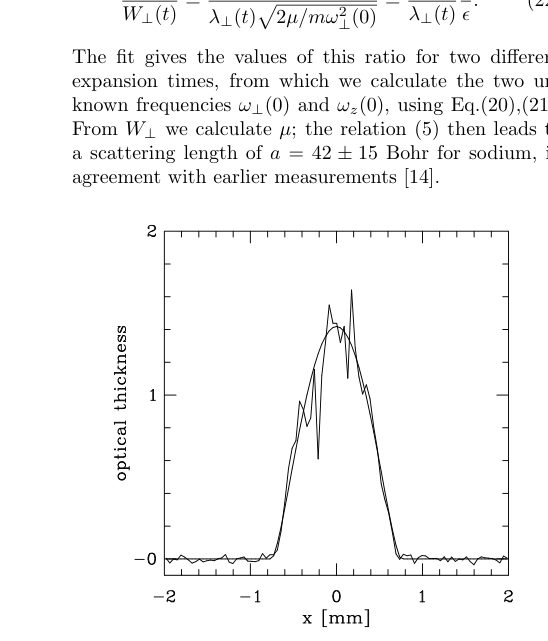
<figcaption class="paper-figure-caption"><b>Fig 1.</b> FIG. 1: Spatial density of an expanding condensate integrated along y axis, cut along x axis (that is at z = 0). Experimental data obtained at MIT (expansion time of 40 ms) and fit from theory.</figcaption>
</figure>
</div>

<p><strong>Summary.</strong> This paper develops an analytical theory to model Bose-Einstein condensates expanding from time-dependent harmonic traps. By using a unitary scaling transform on the Gross-Pitaevskii equation, the complex dynamics are reduced to solving for three key scaling parameters. This method allows researchers to quantitatively analyze experimental measurements of cloud expansion and collective excitations to determine material properties like the scattering length.</p>
<p><strong>Why it may be interesting.</strong> This work provides a powerful analytical framework for analyzing non-equilibrium dynamics in trapped quantum gases, connecting macroscopic observables (like aspect ratio) directly to fundamental interaction parameters ($a$) without needing direct measurement of trap frequencies.</p>
<details>
<summary>Detailed structure</summary>
<p><strong>Main problem.</strong> To derive analytical results for the macroscopic wave function of a Bose-Einstein condensate (BEC) evolving within a time-dependent harmonic potential.</p>
<p><strong>Main result.</strong> The BEC dynamics are entirely characterized by the evolution of three scaling parameters ($\lambda_j(t)$), allowing for <em>ab initio</em> calculation of time-of-flight signals and fitting experimental data to determine scattering lengths.</p>
<p><strong>Method.</strong> The authors employ a unitary quantum scaling transform applied to the Gross-Pitaevskii equation, reducing the complex dynamics to solving coupled differential equations for the scaling factors.</p>
<p><strong>Model / system.</strong> The system is a BEC governed by the time-dependent Gross-Pitaevskii equation in an anisotropic harmonic trap. The initial state uses the Thomas-Fermi approximation, and the evolution is analyzed via classical gas analogies.</p>
<p><strong>Key observables.</strong> Spatial density profile, aspect ratio of the cloud width ($W_z/W_\perp$), and scattering length ($a$).</p>
<p><strong>Important parameters / regimes.</strong> The three scaling factors $\lambda_j(t)$, the trapping frequencies $\omega_j(t)$, and the interaction strength $g$ (related to scattering length $a$).</p>
<p><strong>Assumptions / limitations.</strong> Approximations include neglecting terms of order 2 in the modulation parameter ($\epsilon$) and assuming linear response for small excitations. The mean-field treatment is noted to fail for long free oscillation times.</p>
<p><strong>Figures summary.</strong> Figure 2 compares theoretical predictions (solid line) with experimental data (diamonds from MIT) showing the aspect ratio versus free oscillation time ($ au_o$).</p>
<p><strong>Paper structure.</strong> The paper establishes the GPE and introduces the scaling transform. It derives the differential equations for $\lambda_j(t)$, analyzes specific cases like sudden trap opening, and then details the linear response theory to calculate excitations after modulation and time-of-flight.</p>
</details>
<details>
<summary>Abstract</summary>
<p>We present analytical results for the macroscopic wave function of a Bose-Einstein condensate in a time dependent harmonic potential. The evolution of the spatial density is a dilatation, characterized by three scaling factors which allow a classical interpretation of the dynamics. This approach is an efficient tool for the analysis of recent experimental results on the expansion and collective excitation of a condensate.</p>
</details>
<p><sub><a href="#top">↑ back to top</a></sub></p>

<p><a id="paper-2607.19195"></a></p>
<h3 id="free-energy-landscape-of-dense-associative-memory"><a href="http://arxiv.org/abs/2607.19195v1">Free energy landscape of Dense Associative Memory</a></h3>
<p><strong>Authors:</strong> Sumedha, Abhishek Singh<br>
<strong>Type:</strong> theory · <strong>Category:</strong> disordered systems and neural networks · <strong>PDF:</strong> <a href="https://arxiv.org/pdf/2607.19195v1">https://arxiv.org/pdf/2607.19195v1</a><br>
<strong>Analysis basis:</strong> full PDF text, analyzed in chunks
<strong>Topic relevance:</strong> <code>Keldysh / 2PI / non-Gaussian methods</code> <strong>3/5</strong> · <code>methods for driven-dissipative</code> <strong>2/5</strong> · <code>analog quantum simulation</code> <strong>1/5</strong> · <code>correlated / nonlocal dissipation</code> <strong>1/5</strong> · <code>correlated cavity matter</code> <strong>1/5</strong> · <code>driven-dissipative phase transition</code> <strong>1/5</strong> · <code>entanglement &amp; information structure</code> <strong>1/5</strong> · <code>non-equilibrium dynamics</code> <strong>1/5</strong> · <code>non-equilibrium universality</code> <strong>1/5</strong></p>
<div class="figure-strip-hint">↔ Scroll figures horizontally</div>
<div class="paper-figures-scroll">
<figure class="paper-figure-card">
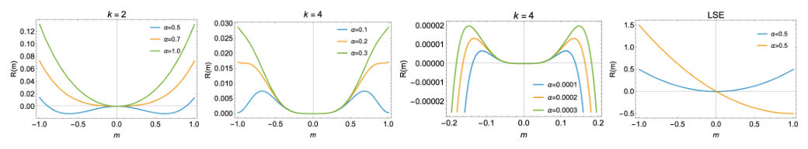
<figcaption class="paper-figure-caption"><b>Fig 1.</b> Figure 1: Plot of disorder averaged ground state energy of retrieval(R(m)) of a random memory when N, P →∞. We have taken ek = 1 and hence γ = α. a) for Hopfield model,b) k = 4 DenseAM. In both cases the function R(m) is plotted near, above and below the transition, In (c) k = 4 basin of m = 0 state is shown to illustrtate that it is always present. In (d) R(m) for LSE model above and below the transition is shown.</figcaption>
</figure>
</div>

<p><strong>Summary.</strong> This paper develops a powerful theoretical framework using large deviations theory to calculate the free energy landscape for various dense associative memory models. It shows that increasing the interaction order leads to first-order phase transitions, meaning successful memory retrieval critically depends on starting near the correct initial state basin. This provides systematic tools for analyzing complex, high-dimensional energy minimization problems.</p>
<p><strong>Why it may be interesting.</strong> While focused on classical neural networks, the use of advanced statistical mechanics tools like large deviations theory to characterize complex energy landscapes is highly relevant for understanding metastable states in quantum many-body systems or optimization problems involving quantum circuits.</p>
<details>
<summary>Detailed structure</summary>
<p><strong>Main problem.</strong> The primary goal is deriving a general expression for the free energy landscape of dense associative memories (DenseAMs) and analyzing how memory retrieval dynamics depend on initial conditions.</p>
<p><strong>Main result.</strong> The method provides an exact free energy functional for polynomial interactions, revealing that for higher-order networks ($k>2$), retrieval exhibits first-order transitions dependent on the starting state's basin of attraction.</p>
<p><strong>Method.</strong> The authors employ large deviations theory and a tilted large deviations principle to derive the free energy functional $I_eta(\mathbf{m})$, followed by self-consistency equations for fixed points in the extensive limit.</p>
<p><strong>Model / system.</strong> The system models Dense Associative Memories (DenseAMs) using Ising spins ($\pm 1$) and higher-order polynomial interactions. The analysis compares results across different interaction orders ($k=2, 3, 4$) and includes the Log-Sum-Exponential (LSE) activation model.</p>
<p><strong>Key observables.</strong> Free energy functional $F(\mathbf{m})$, ground state energy $R(\mathbf{m})$, susceptibility $\chi(m)$, and retrieval thresholds ($\alpha_c$).</p>
<p><strong>Important parameters / regimes.</strong> Interaction order ($k$), disorder parameter ($\gamma$), inverse temperature ($eta$), and the ratio of stored patterns to system size.</p>
<p><strong>Assumptions / limitations.</strong> The analysis relies on the large $N$ limit, uses approximations like Gaussian distributions for overlaps in the LSE model, and assumes specific forms for the cost function.</p>
<p><strong>Figures summary.</strong> Figure 1 illustrates the free energy landscape $R(m)$ for both Hopfield and DenseAM ($k=4$) near/below transition points, showing the persistence of the $m=0$ basin. It also shows the LSE model's landscape.</p>
<p><strong>Paper structure.</strong> The paper systematically develops the large deviations framework to find the free energy functional for general polynomial interactions. It then applies this to specific models (Hopfield, LSE) to analyze phase transitions and retrieval dynamics based on the overlap vector $\mathbf{m}$.</p>
</details>
<details>
<summary>Abstract</summary>
<p>Using large deviations theory, we solve and obtain a general expression for the free energy functional for a broad class of associative memories, including dense associative memories. We illustrate the method by reproducing classical results for the Hopfield model. For a finite number of patterns, we derive the temperature-dependent free energy functional for dense associative memories featuring polynomial interactions and Log-Sum-Exponential (LSE) activation. We also evaluate the disorder-averaged ground-state energy of these systems in the extensive limit. Our analytical framework reveals how memory retrieval depends on the initial state in higher-order dense networks, and gives the exact full-retrieval threshold for the LSE model. This method provides a systematic procedure for analyzing diverse, complex architectures in associative memory.</p>
</details>
<p><sub><a href="#top">↑ back to top</a></sub></p>

<p><a id="paper-2607.18959"></a></p>
<h3 id="integrable-multi-species-ssep-with-reactive-particle-species"><a href="http://arxiv.org/abs/2607.18959v1">Integrable multi-species SSEP with reactive particle species</a></h3>
<p><strong>Authors:</strong> Mathieu Dabrowski, Loïc Poulain d'Andecy, Eric Ragoucy<br>
<strong>Type:</strong> theory · <strong>Category:</strong> statistical mechanics · <strong>PDF:</strong> <a href="https://arxiv.org/pdf/2607.18959v1">https://arxiv.org/pdf/2607.18959v1</a><br>
<strong>Analysis basis:</strong> full PDF text, analyzed in chunks
<strong>Topic relevance:</strong> <code>methods for driven-dissipative</code> <strong>3/5</strong> · <code>non-equilibrium dynamics</code> <strong>3/5</strong> · <code>non-equilibrium universality</code> <strong>2/5</strong> · <code>Keldysh / 2PI / non-Gaussian methods</code> <strong>1/5</strong> · <code>analog quantum simulation</code> <strong>1/5</strong> · <code>correlated / nonlocal dissipation</code> <strong>1/5</strong> · <code>driven-dissipative phase transition</code> <strong>1/5</strong></p>
<div class="figure-strip-hint">↔ Scroll figures horizontally</div>
<div class="paper-figures-scroll">
<figure class="paper-figure-card">
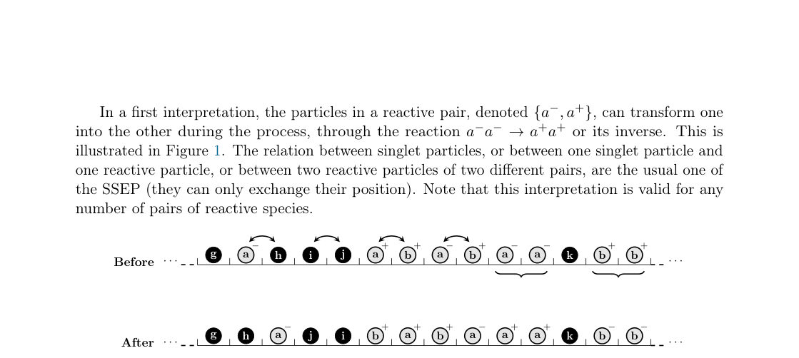
<figcaption class="paper-figure-caption"><b>Fig 1.</b> Figure 1: Illustration of a possible evolution in the transformation interpretation of the (p, q)-SSEP. The lattice is filled with singlet particles, in black, labeled by g, h, i, j, k ∈J1, pK and with reactive particles, in grey, labeled a± and b± with a, b ∈J1, qK and a ̸= b.</figcaption>
</figure>
<figure class="paper-figure-card">
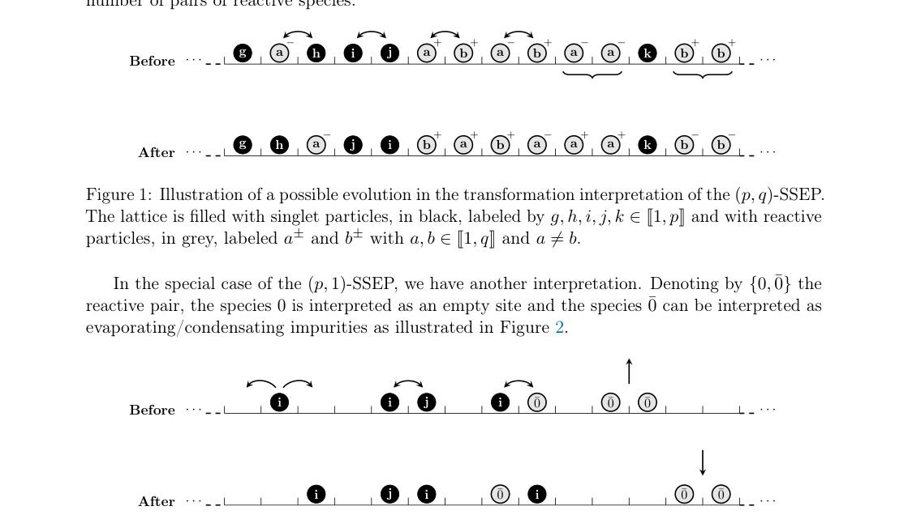
<figcaption class="paper-figure-caption"><b>Fig 2.</b> Figure 2: Illustration of a possible evolution in the evaporation-condensation interpretation. Particle species 0 represent empty sites and the conjugate species ¯0 in grey to evaporating- condensating particles. Singlet particles are black and are labeled by i, j ∈J1, pK.</figcaption>
</figure>
<figure class="paper-figure-card">
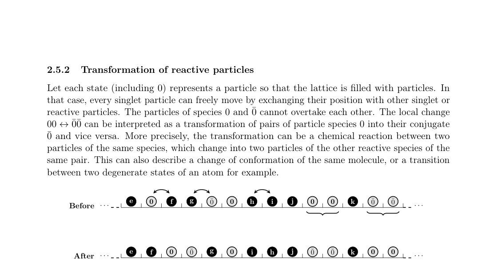
<figcaption class="paper-figure-caption"><b>Fig 3.</b> Figure 3: Illustration of a possible evolution in the transformation interpretation. The lattice is filled with singlet particles, in black, labeled by e, f, g, h, i, j, k ∈J1, pK and with reactive particles, in grey, of species 0 and ¯0.</figcaption>
</figure>
<figure class="paper-figure-card">
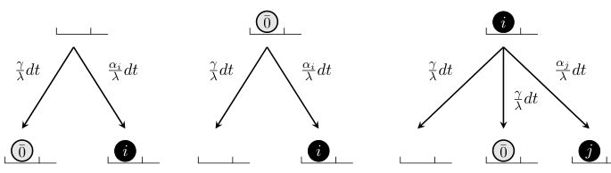
<figcaption class="paper-figure-caption"><b>Fig 4.</b> Figure 4: Graphical representation of the transition probabilities given by B(1) on the first site. The particle of species 0 is interpreted as an empty site.</figcaption>
</figure>
<figure class="paper-figure-card">
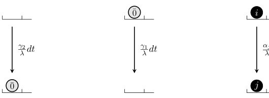
<figcaption class="paper-figure-caption"><b>Fig 5.</b> Figure 5: Graphical representation of the transition probabilities given by B(2) on the first site. The particle of species 0 is interpreted as an empty site.</figcaption>
</figure>
</div>

<p><strong>Summary.</strong> This paper develops the mathematical framework for multi-species Symmetric Simple Exclusion Processes incorporating reactive particles. By leveraging techniques from integrable systems theory (YBE), the authors prove the model's integrability and derive detailed combinatorial formulas to count the system's stationary state sectors. This work provides deep theoretical insights into non-equilibrium statistical mechanics models with chemical reaction dynamics.</p>
<p><strong>Why it may be interesting.</strong> The connection between integrable quantum field theory structures (YBE solutions) and non-equilibrium statistical mechanics models like SSEPs is highly relevant to understanding complex many-body dynamics far from equilibrium, which is a key area of modern condensed matter physics.</p>
<details>
<summary>Detailed structure</summary>
<p><strong>Main problem.</strong> The research investigates integrable multi-species Symmetric Simple Exclusion Processes (SSEP) that incorporate reactive particle species, generalizing standard SSEPs.</p>
<p><strong>Main result.</strong> Integrability is proven for the general $(p, q)$-SSEP in the periodic case and for specific boundary conditions in the open case. Furthermore, explicit combinatorial formulas are derived for counting the sectors of the system's stationary state.</p>
<p><strong>Method.</strong> The authors employ methods rooted in quantum integrable systems theory, specifically using set-theoretical solutions to the Yang-Baxter Equation (YBE) to construct the Markov matrix and prove integrability via transfer matrices.</p>
<p><strong>Model / system.</strong> The model is the $(p, q)$-SSEP on a 1D lattice, which describes interacting particles where some species are 'reactive' and can undergo pair transformations or evaporation/condensation. The dynamics are governed by a continuous-time Markov process defined on the configuration space.</p>
<p><strong>Key observables.</strong> Non-equilibrium stationary state (NESS) physical quantities, including mean lattice currents, particle densities, and reaction rates.</p>
<p><strong>Important parameters / regimes.</strong> The number of singlet species ($p$), the number of reactive pairs ($q$), and the system size $L$.</p>
<p><strong>Assumptions / limitations.</strong> Integrability is assumed or proven using YBE solutions; calculations for physical quantities are performed assuming specific integrable boundary types.</p>
<p><strong>Figures summary.</strong> Figure 1 illustrates particle transformations (e.g., $a^-a^- 	o a^+a^+$), and Figure 2 shows the evaporation-condensation interpretation of the $(p, 1)$-SSEP using empty sites ($ ext{0}$) and impurities ($ar{   ext{0}}$).</p>
<p><strong>Paper structure.</strong> The paper progresses by first introducing the generalized model ($(p, q)$-SSEP) and proving its integrability. It then details the analysis of the $(p, 1)$-SSEP, providing physical interpretations (evaporation vs. reaction) and deriving invariants for characterizing sectors in the periodic case before tackling open boundary conditions.</p>
</details>
<details>
<summary>Abstract</summary>
<p>We investigate integrable exclusion Markov processes constructed from set-theoretical solutions of the Yang-Baxter Equation (YBE) that generalise the multi-species Symmetric Simple Exclusion Process (SSEP). We first introduce the process called the $ (p,1) $-SSEP that is analogous to the multi-species SSEP but with an extra particle species qualified as reactive. Reactive species are able to evaporate and condensate by pairs or to transform by pairs depending on the interpretation. We provide a full combinatorial study of the sectors in the periodic case. We prove the integrability of the process in the periodic case and in the open case for two types of boundaries that we introduce using Baxterisations of solutions of the reflection equation. Next we move on to the process called $ (p,q) $-SSEP, i.e. the multi-species SSEP with an arbitrary number of reactive particle species. We prove its integrability in the periodic case and, for the open case, we introduce integrable boundaries generalising the ones considered for the $ (p,1) $-SSEP. Finally, we define physical quantities relevant to the models and we compute them in the non-equilibrium stationary state of the open $ (p,q) $-SSEP for one type of integrable boundaries.</p>
</details>
<p><sub><a href="#top">↑ back to top</a></sub></p>

<p><a id="paper-2607.18396"></a></p>
<h3 id="quantum-critical-fan-and-emergent-relativistic-symmetry-of-two-dimensional-dirac-semimetals"><a href="http://arxiv.org/abs/2607.18396v1">Quantum critical fan and emergent relativistic symmetry of two-dimensional Dirac semimetals</a></h3>
<p><strong>Authors:</strong> Friederike Ihssen, Bilal Hawashin, Mireia Tolosa-Simeón, Michael M. Scherer<br>
<strong>Type:</strong> theory · <strong>Category:</strong> statistical mechanics · <strong>PDF:</strong> <a href="https://arxiv.org/pdf/2607.18396v1">https://arxiv.org/pdf/2607.18396v1</a><br>
<strong>Analysis basis:</strong> full PDF text, analyzed in chunks
<strong>Topic relevance:</strong> <code>Keldysh / 2PI / non-Gaussian methods</code> <strong>3/5</strong> · <code>analog quantum simulation</code> <strong>2/5</strong> · <code>driven-dissipative phase transition</code> <strong>2/5</strong> · <code>non-equilibrium universality</code> <strong>2/5</strong> · <code>Kondo &amp; dissipative impurity</code> <strong>1/5</strong> · <code>methods for driven-dissipative</code> <strong>1/5</strong> · <code>non-equilibrium dynamics</code> <strong>1/5</strong></p>
<div class="figure-strip-hint">↔ Scroll figures horizontally</div>
<div class="paper-figures-scroll">
<figure class="paper-figure-card">
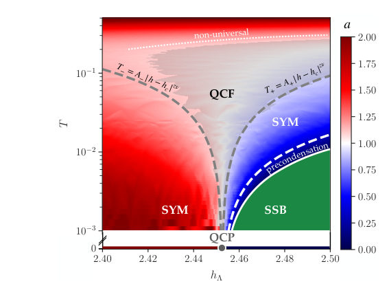
<figcaption class="paper-figure-caption"><b>Fig 1.</b> FIG. 1. GNY phase diagram and quantum critical fan. The color scheme shows the calculated scaling exponent of the thermal correlation length a, cf. Eq. (46), as a function of the coupling hΛ and temperature T, which can be used to identify the quantum critical fan (QCF). The crossovers delimiting the expected extent of the QCF are shown as dashed gray lines, cf. Eq. (47). Within this region, the gray-shaded area indicates the region where |z −a| &lt; 0.1, i.e., where the temperature dependence of the thermal correlation length follows the scaling imprinted by the QCP. The other features shown in the phase diagram are discussed in the main text, e.g., the QCP, the precondensation regime, the...</figcaption>
</figure>
<figure class="paper-figure-card">
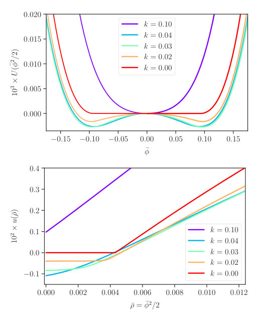
<figcaption class="paper-figure-caption"><b>Fig 2.</b> FIG. 2. RG evolution of the effective potential. Top: Scale- and field-dependence of the potential Uk. Bottom: Field derivative of the effective potential u = ∂¯ρU as a function of ¯ρ. Different RG scales k are indicated by the color scheme, at temperature T = 0 and Yukawa coupling hΛ = 2.55.</figcaption>
</figure>
<figure class="paper-figure-card">
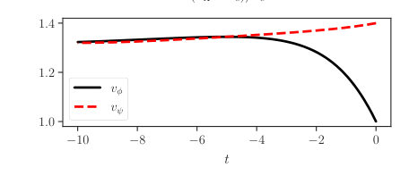
<figcaption class="paper-figure-caption"><b>Fig 3.</b> FIG. 3. Correlation length and velocity flows from numerical integration of the functional RG flow equations. Top: Static correlation length as a function of the tuning parameter δh = (hΛ −hc)/hc, used to extract the correlation length exponent via ξ⊥∝δh−ν. Bottom: RG flow of the bosonic (black solid line) and fermionic (red dashed line) ve- locities at the QCP.</figcaption>
</figure>
<figure class="paper-figure-card">
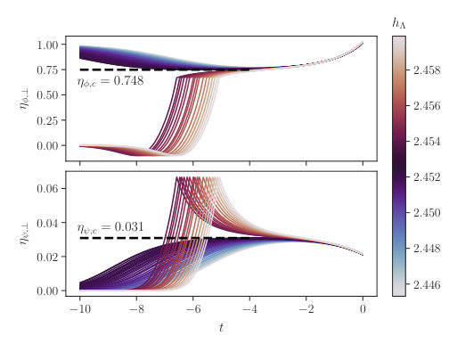
<figcaption class="paper-figure-caption"><b>Fig 4.</b> FIG. 4. Anomalous dimensions at the QCP from the numerical integration of the functional RG flow equations. The anomalous dimensions are extracted by projecting the wave- function renormalizations onto the spatial (perpendicular) direction. We show the RG time dependence of the anomalous dimensions for different initial values of the Yukawa coupling hΛ close to the QCP. The extracted critical values of the anomalous dimensions are indicated by the dashed black lines and shown in Table I.</figcaption>
</figure>
<figure class="paper-figure-card">
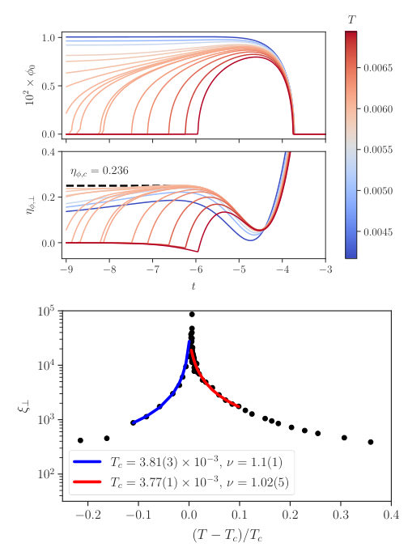
<figcaption class="paper-figure-caption"><b>Fig 5.</b> FIG. 5. Critical exponents at finite-T transition. Top: Expectation value of the order parameter ϕ0, c.f. Eq. (24), and its corresponding anomalous dimension in the vicinity of the finite-temperature phase transition for hΛ = 2.48 at various temperatures indicated by the color shading. The dashed line indicates the exact solution η2D, Ising = 1/4. Bottom: Fit of the critical exponent ν from the scaling of the correlation length given in Eq. (43). The correlation length is extracted from the inverse screening mass in Eq. (36) at t = −9.</figcaption>
</figure>
</div>

<p><strong>Summary.</strong> This work develops a comprehensive field-theoretical framework using the functional renormalization group (fRG) to analyze the phase diagram of 2D Dirac semimetals near a quantum critical point. The study confirms that the system exhibits universal critical behavior belonging to the chiral Ising and 2D Ising universality classes at different temperature limits. It provides crucial insights into how relativistic symmetry can emerge in these strongly interacting electronic systems.</p>
<p><strong>Why it may be interesting.</strong> While focused on condensed matter criticality, the use of advanced non-perturbative RG techniques to map out phase boundaries and emergent symmetries is highly relevant for understanding many-body dynamics in strongly correlated systems studied in AMO physics.</p>
<details>
<summary>Detailed structure</summary>
<p><strong>Main problem.</strong> The study aims to understand finite-temperature effects and the phase diagram of two-dimensional Dirac semimetals near a quantum critical point (QCP). This requires analyzing the Gross--Neveu--Yukawa model in both semimetallic and insulating regimes.</p>
<p><strong>Main result.</strong> The authors find that at zero temperature, the QCP exhibits critical exponents matching the chiral Ising universality class, and relativistic symmetry emerges. At finite temperatures, a classical phase transition into the disordered phase belongs to the 2D Ising universality class.</p>
<p><strong>Method.</strong> The primary method employed is the non-perturbative functional renormalization group (fRG) approach applied to the effective field theory describing the system's dynamics.</p>
<p><strong>Model / system.</strong> The physical system involves two-dimensional Dirac semimetals, modeled by the Gross--Neveu--Yukawa (GNY) model, which simplifies to the chiral Ising model. The Lagrangian describes interacting fermions coupled to a scalar order parameter field $\phi$.</p>
<p><strong>Key observables.</strong> Critical exponents ($\alpha$), phase diagram boundaries, quasiparticle weight, and the extent of the quantum critical fan.</p>
<p><strong>Important parameters / regimes.</strong> Temperature ($T$), coupling constants (e.g., $h\Lambda$), and proximity to the QCP.</p>
<p><strong>Assumptions / limitations.</strong> The analysis relies on a non-perturbative fRG treatment, which is used to map out the phase diagram across different temperature regimes.</p>
<p><strong>Figures summary.</strong> Figure 1 illustrates the GNY phase diagram and the Quantum Critical Fan (QCF), with color coding representing the calculated scaling exponent ($\alpha$) as a function of coupling ($h\Lambda$) and temperature ($T$).</p>
<p><strong>Paper structure.</strong> The paper develops a unified field-theoretical framework by analyzing the system's behavior across different regimes: zero temperature QCP analysis, finite temperature classical transition analysis, and finally determining the scaling properties within the quantum critical fan.</p>
</details>
<details>
<summary>Abstract</summary>
<p>Two-dimensional Dirac semimetals near a quantum critical point can be described by Gross--Neveu--Yukawa models. In view of recent experimental advances exhibiting a transition from Dirac semimetal to insulator in highly-tunable van-der-Waals heterostructures, a better understanding of finite-temperature effects is mandatory. Here, we study the Gross--Neveu--Yukawa phase diagram of the chiral Ising model with a non-perturbative field-theory approach at zero and finite temperature, both in the semimetallic phase and in the insulating phase with spontaneously broken $\mathbb{Z}_2$ symmetry. At zero temperature, we find a quantum critical point with critical exponents that are close to the ones of the chiral Ising universality class, and show that relativistic symmetry is emergent close to the quantum critical point. At finite temperature, the ordered phase survives up to a finite critical temperature, at which we observe a classical phase transition into the disordered phase. We confirm that this transition lies in the two-dimensional Ising universality class. Finally, we determine the extent and scaling properties of the quantum critical fan, and the behavior of the quasiparticle weight, therein. In summary, we present a unified field-theoretical framework for the phase diagram of the chiral Ising model in the surroundings of its quantum critical point.</p>
</details>
<p><sub><a href="#top">↑ back to top</a></sub></p>

<p><a id="paper-2607.18552"></a></p>
<h3 id="quantum-reservoir-computing-recent-advances-and-future-directions"><a href="http://arxiv.org/abs/2607.18552v1">Quantum Reservoir Computing: Recent Advances and Future Directions</a></h3>
<p><strong>Authors:</strong> Shehbaz Tariq, Muhammad Talha, Arshid Ali, Muhammad Diyan, Symeon Chatzinotas<br>
<strong>Type:</strong> both · <strong>Category:</strong> quantum information and computing · <strong>PDF:</strong> <a href="https://arxiv.org/pdf/2607.18552v1">https://arxiv.org/pdf/2607.18552v1</a><br>
<strong>Analysis basis:</strong> full PDF text, analyzed in chunks
<strong>Topic relevance:</strong> <code>QC/QI experiment</code> <strong>3/5</strong> · <code>analog quantum simulation</code> <strong>2/5</strong> · <code>non-equilibrium dynamics</code> <strong>2/5</strong> · <code>driven-dissipative phase transition</code> <strong>1/5</strong> · <code>entanglement &amp; information structure</code> <strong>1/5</strong> · <code>methods for driven-dissipative</code> <strong>1/5</strong> · <code>quantum measurements</code> <strong>1/5</strong> · <code>quantum optics experiment</code> <strong>1/5</strong></p>
<div class="figure-strip-hint">↔ Scroll figures horizontally</div>
<div class="paper-figures-scroll">
<figure class="paper-figure-card">
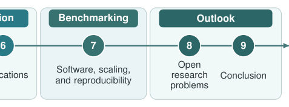
<figcaption class="paper-figure-caption"><b>Fig 1.</b> Figure 1: Organization and analytical flow of the survey.</figcaption>
</figure>
<figure class="paper-figure-card">
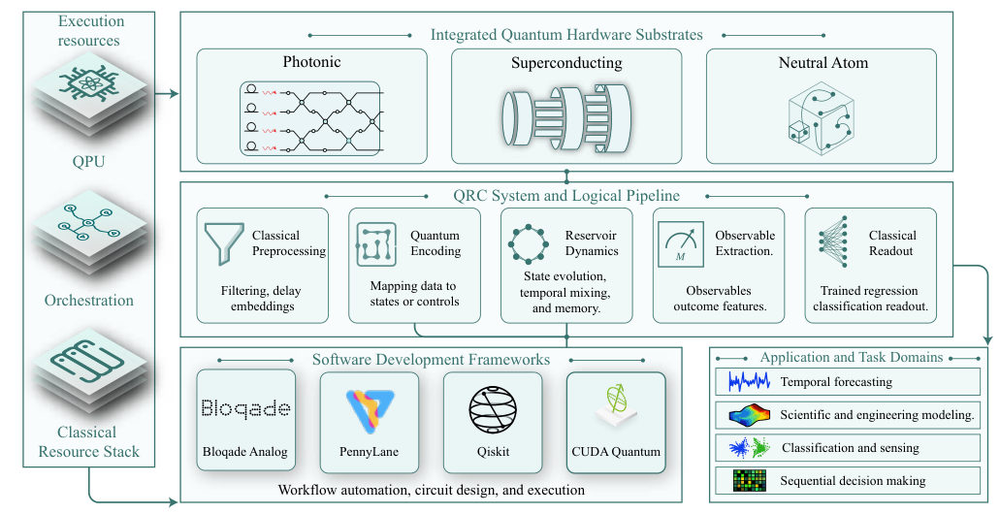
<figcaption class="paper-figure-caption"><b>Fig 2.</b> Figure 2: Integrated QRC stack. Classical preprocessing maps application data to inputs accepted by the quantum interface. Reservoir evolution generates a state trajectory, measurement converts selected properties of that trajectory into classical features, and the readout maps those features to predictions. Finite sampling and measurement disturbance depend on the operating protocol. The surrounding blocks show representative hardware, software, execution resources, and task domains.</figcaption>
</figure>
<figure class="paper-figure-card">
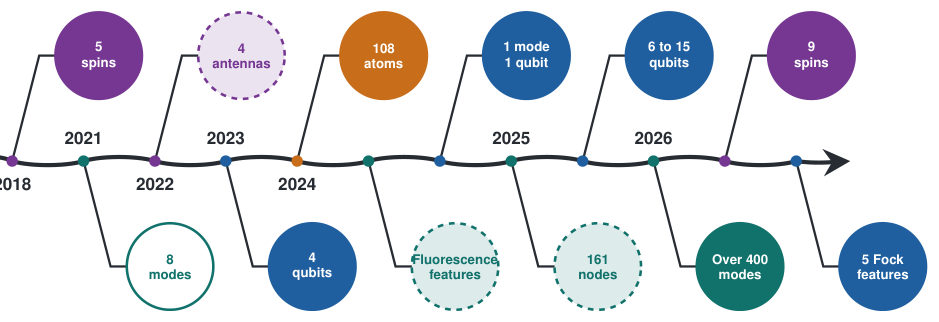
<figcaption class="paper-figure-caption"><b>Fig 3.</b> Figure 3: Timeline of representative QRC experiments, models, and related physical reservoir studies from 2018 to 2026. Color denotes the platform family and marker style denotes the study type. Bubble text reports the physical scale or measured resource stated in each study. These quantities are heterogeneous and are not directly comparable as reservoir capacity. The entries cover spin, NMR, and magnonic systems [56, 96, 98]; photonic, CV, bosonic, and quantum dot systems [1, 29, 102, 129]; superconducting, microwave, and circuit QED systems [23, 55, 116, 144]; and a neutral atom implementation [69].</figcaption>
</figure>
</div>

<p><strong>Summary.</strong> This survey establishes a unified system model for Quantum Reservoir Computing (QRC), detailing the necessary components from input encoding to classical readout across diverse hardware platforms. It critically analyzes that computational power depends on the entire processing chain, not just Hilbert space size. The work aims to define rigorous benchmarking standards needed to substantiate claims of quantum advantage in this emerging field.</p>
<p><strong>Why it may be interesting.</strong> It provides a rigorous framework for analyzing how physical implementations of quantum dynamics can be mapped onto machine learning tasks, which is highly relevant for understanding resource requirements in open quantum systems modeling.</p>
<details>
<summary>Detailed structure</summary>
<p><strong>Main problem.</strong> Quantum Reservoir Computing (QRC) aims to leverage quantum dynamics for feature extraction from time-series data in machine learning, while overcoming limitations related to hardware constraints and establishing clear benchmarks.</p>
<p><strong>Main result.</strong> The paper develops a comprehensive system model connecting all components of QRC—from input encoding through reservoir evolution to classical readout—and provides a framework for evaluating true quantum advantage.</p>
<p><strong>Method.</strong> It proposes a hybrid computational approach where the quantum processor (QPU) handles the non-linear dynamics, and classical high-performance computing (HPC) manages preprocessing, optimization, and final readout.</p>
<p><strong>Model / system.</strong> The system is modeled through distinct stages: input encoding ($
ho_{t,0} = E(\dots)$), reservoir evolution ($
ho_{t,v} = R(\dots)$), measurement ($z_t$), and classical readout. Platforms examined include spin, photonic, superconducting, bosonic, and neutral atom systems.</p>
<p><strong>Key observables.</strong> Feature vector $z_t$ (from measurement) and prediction $b_{yt}$ (from readout); memory, nonlinearity, and expressivity are key diagnostic properties.</p>
<p><strong>Important parameters / regimes.</strong> Fixed or selected parameters ($\lambda_p, \lambda_e, \lambda_H$) governing preprocessing, encoding, and dynamics; finite sampling rates and hardware noise levels are critical constraints.</p>
<p><strong>Assumptions / limitations.</strong> The computational power depends jointly on the input encoding, quantum evolution, observables, measurement, and readout, not just Hilbert space dimension. Current results do not guarantee a broad quantum advantage over classical methods.</p>
<p><strong>Figures summary.</strong> Figure 1 outlines the survey's organization across foundations to benchmarking; Figure 2 illustrates the integrated QRC stack connecting classical preprocessing, reservoir dynamics, measurement, and classical readout.</p>
<p><strong>Paper structure.</strong> The paper organizes QRC by developing a common system model that connects all processing stages. It then surveys computational properties, discusses various reservoir architectures (spin, photonic, etc.), outlines operating protocols, and addresses benchmarking standards to evaluate quantum advantage claims.</p>
</details>
<details>
<summary>Abstract</summary>
<p>Quantum reservoir computing (QRC) uses the dynamics of a fixed or weakly tuned quantum system to transform temporal and sequential inputs into measured features, while training is typically confined to a classical readout. This separation reduces reliance on repeated quantum parameter updates and avoids the barren plateaus associated with variational circuit training. Its computational power is often attributed to the exponentially large Hilbert space of the quantum system. However, the memory, nonlinearity, and expressivity that determine what a reservoir can actually compute depend jointly on the input encoding, quantum evolution, observables, measurement, and readout, not on Hilbert space dimension alone. On hardware, these capabilities are further constrained by finite sampling, hardware noise, measurement backaction, and the cost of estimating observables, so a large state space alone does not guarantee useful computation. In this survey, we develop a common system model that connects these components and use it to organize QRC foundations, computational properties, reservoir architectures, operating protocols, and physical implementations. We examine spin, photonic, superconducting, bosonic, neutral atom, and other analog platforms, together with applications, software and high performance computing support, benchmarking, and reproducibility. The analysis distinguishes hardware demonstrations from simulations and identifies the assumptions and resources that govern comparisons across implementations. Current results do not establish a broad quantum advantage over well matched classical reservoirs. We therefore specify the resource accounting, benchmark standards, and theoretical criteria needed to evaluate claims of quantum advantage.</p>
</details>
<p><sub><a href="#top">↑ back to top</a></sub></p>

<p><a id="paper-2607.18977"></a></p>
<h3 id="single-snapshot-inference-of-network-couplings-from-universal-dynamics-at-relative-equilibrium"><a href="http://arxiv.org/abs/2607.18977v1">Single-Snapshot Inference of Network Couplings from Universal Dynamics at Relative Equilibrium</a></h3>
<p><strong>Authors:</strong> Moritz Lampert, Dominic Grün, Ingo Scholtes<br>
<strong>Type:</strong> theory · <strong>Category:</strong> disordered systems and neural networks · <strong>PDF:</strong> <a href="https://arxiv.org/pdf/2607.18977v1">https://arxiv.org/pdf/2607.18977v1</a><br>
<strong>Analysis basis:</strong> full PDF text, analyzed in chunks
<strong>Topic relevance:</strong> <code>methods for driven-dissipative</code> <strong>3/5</strong> · <code>non-equilibrium dynamics</code> <strong>3/5</strong> · <code>driven-dissipative phase transition</code> <strong>2/5</strong> · <code>non-equilibrium universality</code> <strong>2/5</strong> · <code>Frenkel-Kontorova</code> <strong>1/5</strong> · <code>Keldysh / 2PI / non-Gaussian methods</code> <strong>1/5</strong></p>
<div class="figure-strip-hint">↔ Scroll figures horizontally</div>
<div class="paper-figures-scroll">
<figure class="paper-figure-card">
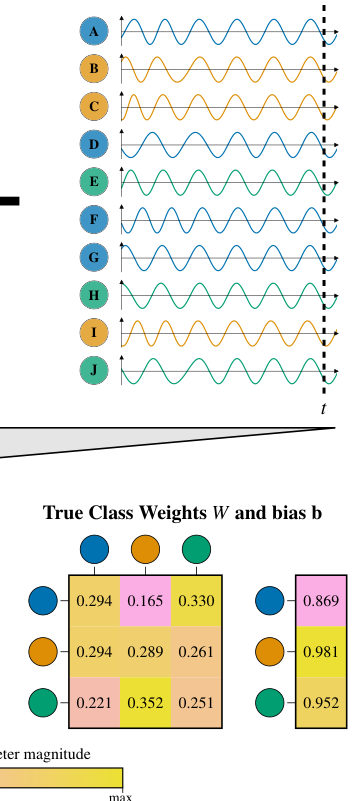
<figcaption class="paper-figure-caption"><b>Fig 1.</b> Figure 1. Overview of the proposed parameter inference method. Given a graph where the topology and node class assignments are known (top left), we can infer hidden class-based coupling weights and class-intrinsic biases (bottom left) using only a single instantaneous snapshot of the node states at time 𝑡(top right). The displayed matrices and state trajectories represent an actual simulation of Kuramoto oscillator dynamics on a 10-node network. For the inference to succeed, the system must exhibit spatially uniform velocity at the measurement time 𝑡– which, in this Kuramoto example, corresponds to a phase-locked state. Because our method formulates the inference as a homogeneous system,...</figcaption>
</figure>
<figure class="paper-figure-card">
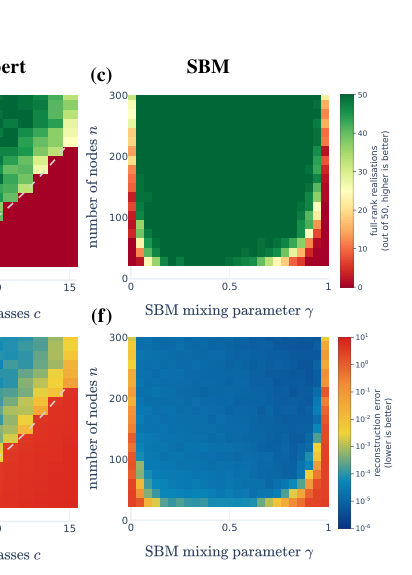
<figcaption class="paper-figure-caption"><b>Fig 2.</b> Figure 2. Rank sufficiency and reconstruction error. (a–c) Heatmaps displaying the number of times the rank condition #r(𝑀𝑧) = 𝑐is satisfied out of 50 random initialisations for varying network sizes and topologies. (d–f) Corresponding heatmaps showing the mean normalised reconstruction error || ˆ˜𝑊∗−˜𝑊∗||𝐹on a logarithmic colour scale. The random realisations are drawn from: (a, d) Erd˝os-R´enyi random graphs with edge probability 𝑝= 8</figcaption>
</figure>
<figure class="paper-figure-card">
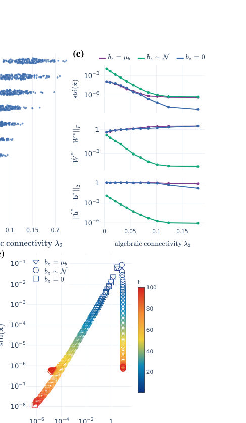
<figcaption class="paper-figure-caption"><b>Fig 3.</b> Figure 3. Experiments on linear consensus dynamics. (a) Topologies and corresponding node state trajectories for Watts-Strogatz random graphs with no (𝑝= 0) and high (𝑝= 0.1) rewiring probability, illustrating how an increased number of “shortcuts” accelerates consensus. (b) The algebraic connectivity 𝜆2 (the second smallest eigenvalue of the weighted Laplacian) as a function of the rewiring probability 𝑝. Results are based on 50 Watts-Strogatz graphs with 𝑛= 125 nodes connecting to their two nearest neighbours and 𝑐= 5 uniformly distributed classes. (c) Standard deviation of the node state velocity std(¤x) and the reconstruction error of the normalised weights and biases evaluated at 𝑡=...</figcaption>
</figure>
<figure class="paper-figure-card">
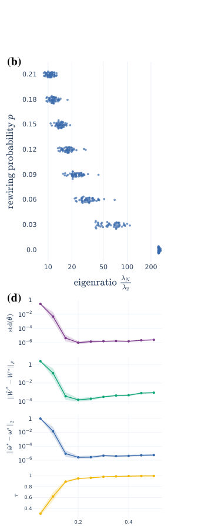
<figcaption class="paper-figure-caption"><b>Fig 4.</b> Figure 4. Experiments on nonlinear Kuramoto dynamics. (a) Topologies and corresponding sine-transformed node states sin(𝜃𝑣) across time for Watts-Strogatz random graphs with no (𝑝= 0) and high (𝑝= 0.21) rewiring probabilities. The comparison illustrates how small-world shortcuts foster rapid phase coherence. (b) The rewiring probability 𝑝 plotted against the corresponding eigenratio 𝜆𝑁</figcaption>
</figure>
<figure class="paper-figure-card">
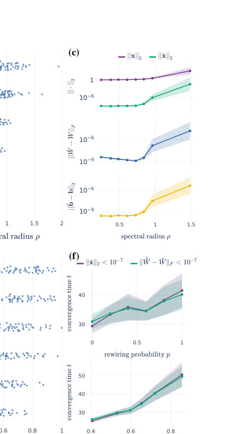
<figcaption class="paper-figure-caption"><b>Fig 5.</b> Figure 5. Experiments on anchored dynamics. (a) Topologies and corresponding node state trajectories for Erd˝os-R´enyi random graphs with sparse (𝑝= 5</figcaption>
</figure>
</div>

<p><strong>Summary.</strong> This paper presents a novel method to reconstruct unknown coupling strengths within networked dynamical systems using only one snapshot of node measurements. By assuming the system operates near a relative equilibrium state, the complex inverse problem is linearized into an algebraic system solvable via linear algebra techniques. This breakthrough shows that spatial structure alone can reveal hidden interaction parameters previously requiring time-series data.</p>
<p><strong>Why it may be interesting.</strong> The technique provides a powerful tool for analyzing complex dynamics where time-series data is unavailable, making it highly relevant for characterizing hidden interactions in physical or biological networks modeled by differential equations.</p>
<details>
<summary>Detailed structure</summary>
<p><strong>Main problem.</strong> The core problem is inferring hidden, class-based coupling strengths within a complex network from only a single snapshot of the system's node states.</p>
<p><strong>Main result.</strong> The authors demonstrate that this inference is possible if the system is observed near a relative equilibrium, allowing spatial heterogeneity to substitute for necessary temporal sampling.</p>
<p><strong>Method.</strong> They transform the inverse problem into a homogeneous linear system by exploiting the common velocity shared by all nodes at relative equilibrium. This allows parameter recovery using Total Least Squares.</p>
<p><strong>Model / system.</strong> The study analyzes dynamical systems on networks, including linear consensus dynamics and nonlinear models like Kuramoto oscillators. The dynamics are governed by coupling functions $f$ between classes of nodes.</p>
<p><strong>Key observables.</strong> Reconstruction error (Frobenius norm) for couplings ($\| \hat{W}^* - W^* \|_F$) and the standard deviation of node velocities ($ ext{std}(\dot{\mathbf{x}})$).</p>
<p><strong>Important parameters / regimes.</strong> The relative equilibrium state, class-specific biases ($b_z$), coupling function $f$, and network topology (ER, BA, SBM).</p>
<p><strong>Assumptions / limitations.</strong> The system must be observed close to a relative equilibrium ($\dot{\mathbf{x}} = k\mathbf{1}$), which linearizes the otherwise nonlinear inverse problem. The recovered parameters are only determined up to an unknown scale and additive shift.</p>
<p><strong>Figures summary.</strong> Figures illustrate successful recovery of couplings using Total Least Squares on Kuramoto dynamics, show rank sufficiency across different network topologies (ER, BA, SBM), and demonstrate information loss if class biases are absent.</p>
<p><strong>Paper structure.</strong> The paper first establishes the limitations of prior methods requiring time-resolved data. It then introduces the relative equilibrium assumption to linearize the problem into a homogeneous system solvable via Total Least Squares. Validation is performed on multiple dynamical systems, comparing reconstruction errors across different network topologies and assessing necessary conditions like class biases.</p>
</details>
<details>
<summary>Abstract</summary>
<p>Many real-world systems can be modelled as complex networks whose collective behaviour is governed by hidden interactions between nodes. Existing methods for inferring these interactions typically require controlled perturbations, time-resolved observations or multiple independent snapshots, all of which are often unavailable in practice. Here we show that class-based coupling strengths can be inferred from a single snapshot of node states when the system is observed close to a relative equilibrium. In this regime, all nodes share a common velocity, which can be absorbed into an effective class bias, transforming the inverse problem into a homogeneous linear system. The coefficients of this linear system are determined entirely by the observed local neighbourhoods and their coupling mechanism, enabling the application to arbitrary known coupling functions. We validate the approach on three different linear and nonlinear dynamical systems, recovering relative class-based couplings and, in special cases, absolute couplings. These results show that spatial heterogeneity can substitute for temporal sampling, enabling single-snapshot inference of hidden coupling strengths in networked dynamical systems.</p>
</details>
<p><sub><a href="#top">↑ back to top</a></sub></p>

<p><a id="paper-2607.18435"></a></p>
<h3 id="bright-telecom-spin-photon-interface-in-silicon-photonics"><a href="http://arxiv.org/abs/2607.18435v1">Bright Telecom Spin-Photon Interface in Silicon Photonics</a></h3>
<p><strong>Authors:</strong> Carolina Crosta, Amirehsan Alizadehherfati, Purbita Purkayastha, Kyu-Young Kim, Jasvith Raj Basani, Chang-Min Lee, Fabio Pezzoli, Edo Waks<br>
<strong>Type:</strong> experiment · <strong>Category:</strong> quantum information and computing · <strong>PDF:</strong> <a href="https://arxiv.org/pdf/2607.18435v1">https://arxiv.org/pdf/2607.18435v1</a><br>
<strong>Analysis basis:</strong> full PDF text, analyzed in chunks
<strong>Topic relevance:</strong> <code>exotic spin models in light-matter</code> <strong>3/5</strong> · <code>quantum optics experiment</code> <strong>3/5</strong> · <code>spintronics-quantum-optics interface</code> <strong>3/5</strong> · <code>QC/QI experiment</code> <strong>1/5</strong> · <code>quantum measurements</code> <strong>1/5</strong></p>
<div class="figure-strip-hint">↔ Scroll figures horizontally</div>
<div class="paper-figures-scroll">
<figure class="paper-figure-card">
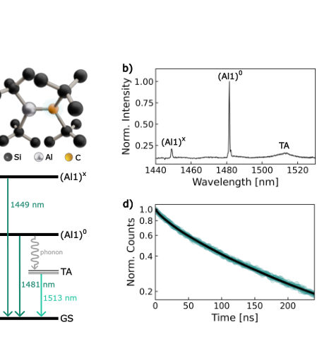
<figcaption class="paper-figure-caption"><b>Fig 1.</b> Figure 1: Atomic structure and ensemble optical characterization. a) Atomic structure of the Al1-center in silicon ((Al–C)Si); b) Photoluminescence emission of an Al1- center ensemble showing a sharp peak at 1481 nm [(Al1)0], corresponding to the zero-phonon line, a broad band fea- ture centered at 1513 nm (TA) associated to the transverse acoustic phonon sideband, and a second peak at 1449 nm [(Al1)x] that we ascribe to recombination from the second excited state of the defect; c) Summary of proposed elec- tronic structure of the Al1-center; d) Time-resolved photo- luminescence measurement of the ensemble (dots) and cor- responding stretched exponential fit (solid line), which pro- vides τ...</figcaption>
</figure>
<figure class="paper-figure-card">
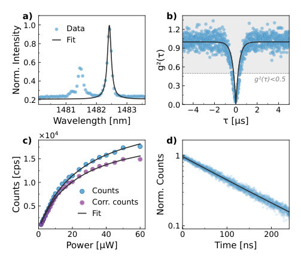
<figcaption class="paper-figure-caption"><b>Fig 2.</b> Figure 2: Optical characterization of a single Al1- center. a) Photoluminescence spectrum (dots) and corre- sponding Lorentzian fit (solid line) of the zero-phonon line at 1482.437 nm. The extracted linewidth is 20.2 ± 0.7 GHz; b) Second-order autocorrelation measurement under contin- uous wave 800 nm pumping with power of 3 µW (dots) and corresponding fit with Equation A3 (solid line). The ex- tracted zero-delay value is g(2)(0) = 0.04 ± 0.02; c) Count rate as a function of CW 800 nm incident power without and with g(2)(0) correction (blue and purple dots, respectively) and two-level system fit with Equation A1 (solid line). Fit- ting of the corrected counts provides Psat = 25 ± 1 µW and...</figcaption>
</figure>
<figure class="paper-figure-card">
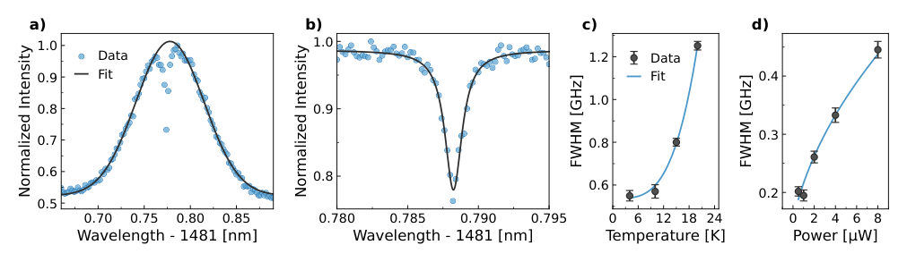
<figcaption class="paper-figure-caption"><b>Fig 3.</b> Figure 3: Transient spectral hole burning measurements on a single Al1-center. a) Two-color photoluminescence excitation spectroscopy of the zero-phonon line with a resolution of 2 pm (dots) and Gaussian fit (solid line), extracting FWHM = 10.85 ± 0.08 GHz. The incident power of the scanning laser is 0.5 µW, while the pumping laser power is 1.5 µW; b) Magnification of the hole burning dip obtained with 0.2 pm resolution and both scanning and pumping laser power of 0.5 µW (dots), and corresponding Lorentz fit (solid line) computing FWHM = 0.202 ± 0.008 GHz; c) FWHM behavior as a function of sample temperature with both scanning and pumping laser power of 5 µW (dots) and corresponding fit...</figcaption>
</figure>
<figure class="paper-figure-card">
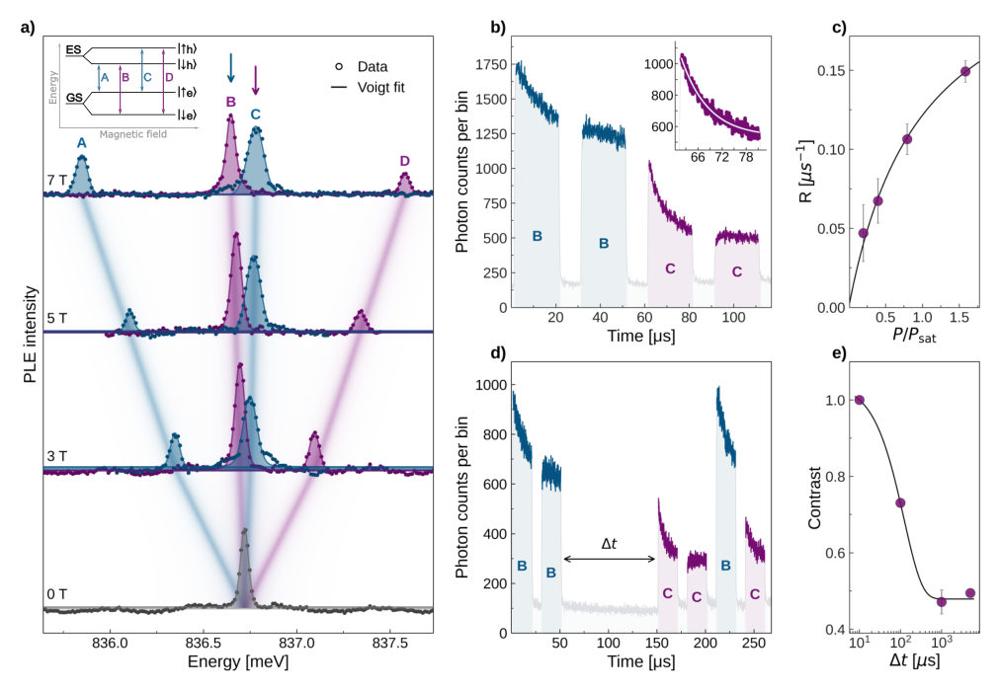
<figcaption class="paper-figure-caption"><b>Fig 4.</b> Figure 4: Magnetospectroscopy and time-resolved optical pumping of a single Al1-center. a) Zeeman splitting via two-color photoluminescence excitation spectroscopy. The blue (purple) spectrum is obtained by fixing the pump laser at peak B (C) energy. The inset figure illustrates the level structure of bound excitonic transitions in presence of an external magnetic field, showing four spin-allowed optical transitions; b) Pulse sequence used to demonstrate optical pumping. The first two pulses pump the population into the opposite spin state, while the second pair transfers the population back to the initial state. The difference between the measured B- and C-pulse amplitudes arises from the...</figcaption>
</figure>
</div>

<p><strong>Summary.</strong> The authors introduce the Al1-center defect as a breakthrough material platform for quantum photonics in silicon. Through rigorous optical and magnetic characterization, they prove it acts as a bright, high-purity single-photon source operating at telecom wavelengths. This establishes the Al1 center as a promising solid-state spin-photon interface for integrated quantum network applications.</p>
<p><strong>Why it may be interesting.</strong> This work directly addresses the hardware requirements for scalable quantum networks by demonstrating a robust, integrated solid-state source of single photons with controllable spin states in silicon, which is crucial for photonic quantum information processing.</p>
<details>
<summary>Detailed structure</summary>
<p><strong>Main problem.</strong> The use of silicon for quantum photonics is limited by the lack of bright, telecom-band emitters with optically addressable spin states suitable for building integrated quantum networks.</p>
<p><strong>Main result.</strong> The Al1-center defect in silicon was demonstrated to be a highly efficient, bright single-photon emitter operating in the telecom band, exhibiting high purity and narrow spectral linewidths.</p>
<p><strong>Method.</strong> Characterization involved time-resolved photoluminescence spectroscopy, second-order correlation measurements ($g^{(2)}(0)$), and magneto-optical spectroscopy on isolated defects within silicon nanophotonic waveguides.</p>
<p><strong>Model / system.</strong> The physical system is the Al1-center defect (an aluminum–carbon complex) embedded in isotopically purified silicon-on-insulator nanophotonics. It functions as a solid-state quantum emitter with addressable spin states, allowing for initialization and readout.</p>
<p><strong>Key observables.</strong> Single-photon purity ($g^{(2)}(0)=0.04$), excited-state lifetime ($\sim 135 	ext{ ns}$), homogeneous linewidth ($\sim 47 	ext{ MHz}$), and Zeeman splitting via magneto-optical measurements.</p>
<p><strong>Important parameters / regimes.</strong> Telecom S-band emission, $  ext{C}_{2   ext{v}}$ symmetry, fast decay rates compared to T-centers, and measurable spin-dependent transitions.</p>
<p><strong>Assumptions / limitations.</strong> The defect structure is stable and its optical properties are dominated by the Al1 center; comparisons are made against established centers like the T-center.</p>
<p><strong>Figures summary.</strong> Figures illustrate the PL spectrum showing characteristic emission peaks ($    ext{(Al1)}_0$), time-resolved decay curves, $g^{(2)}(	au)$ measurements confirming single photons, and magneto-optical spectra revealing spin splitting.</p>
<p><strong>Paper structure.</strong> The paper progresses from identifying the limitation in silicon photonics to proposing the Al1 center. It then presents detailed characterization using multiple spectroscopic techniques (time-resolved PL, $g^{(2)}$, magnetospectroscopy) to confirm its high performance as a quantum emitter and spin qubit platform.</p>
</details>
<details>
<summary>Abstract</summary>
<p>Silicon is an attractive host for scalable quantum photonics, but the absence of bright telecom-band emitters with optically addressable spin states has limited its use for spin-photon interfaces. Here we demonstrate the Al1-center, an aluminum--carbon defect in silicon, as a bright waveguide-integrated single-photon emitter with a ground-state spin. Using isotopically purified silicon-on-insulator nanophotonic devices, we isolate individual Al1-centers and observe high-purity single-photon emission with $g^{(2)}(0)=0.04$ without background subtraction. Time-resolved photoluminescence spectroscopy reveals a fast excited-state lifetime of 135 ns, nearly an order of magnitude shorter than the benchmark provided by the well-studied T-center. Resonant photoluminescence excitation measurements further resolve the zero-phonon transition and reveal a narrow homogeneous linewidth reaching 47 MHz, threefold narrower than the T-center under comparable temperature. Through magneto-optical spectroscopy, we resolve the spin-dependent transitions of the bound-exciton manifold and achieve spin-selective optical pumping, fulfilling the prerequisite for quantum state initialization and readout. These results establish the Al1-center as a bright telecom-band spin-photon interface in silicon photonics and introduce a promising platform for integrated quantum networks.</p>
</details>
<p><sub><a href="#top">↑ back to top</a></sub></p>

<p><a id="paper-2607.18389"></a></p>
<h3 id="exotic-electronic-order-in-a-parabolic-kagome-semimetal"><a href="http://arxiv.org/abs/2607.18389v1">Exotic Electronic Order in a Parabolic Kagome Semimetal</a></h3>
<p><strong>Authors:</strong> C. Alexander Baum, Jonas Issing, Sarbajit Mazumdar, Matteo Dürrnagel, Michael Klett, Ronny Thomale, Lennart Klebl<br>
<strong>Type:</strong> theory · <strong>Category:</strong> strongly correlated electrons · <strong>PDF:</strong> <a href="https://arxiv.org/pdf/2607.18389v1">https://arxiv.org/pdf/2607.18389v1</a><br>
<strong>Analysis basis:</strong> full PDF text, analyzed in chunks
<strong>Topic relevance:</strong> <code>Keldysh / 2PI / non-Gaussian methods</code> <strong>3/5</strong> · <code>analog quantum simulation</code> <strong>3/5</strong> · <code>methods for driven-dissipative</code> <strong>2/5</strong> · <code>entanglement &amp; information structure</code> <strong>1/5</strong> · <code>exotic spin models in light-matter</code> <strong>1/5</strong> · <code>non-equilibrium dynamics</code> <strong>1/5</strong></p>
<div class="figure-strip-hint">↔ Scroll figures horizontally</div>
<div class="paper-figures-scroll">
<figure class="paper-figure-card">
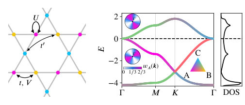
<figcaption class="paper-figure-caption"><b>Fig 1.</b> FIG. 1. Real-space picture of the generalized kagome Hubbard model (left) and corresponding non-interacting band structure (right). We indicate the nearest-neighbor hopping 𝑡, next-nearest-neighbor hop- ping 𝑡′, onsite Hubbard interaction 𝑈, and nearest-neighbor density- density interaction 𝑉(left panel). The right panel shows the corre- sponding band structure for 𝑡= 1, 𝑡′ = −0.3 at filling 𝜈= 2∕3, with the color encoding the sublattice character (A: magenta, B: yellow, C: blue) of the Bloch states. The insets show the Bloch state weight of sublattice A (𝑤𝐴(𝒌) = |𝑢𝐴(𝒌)|2) in the vicinity of 𝒌= Γ for the topmost (upper inset) and middle (lower inset) bands. We note that the bands’...</figcaption>
</figure>
<figure class="paper-figure-card">
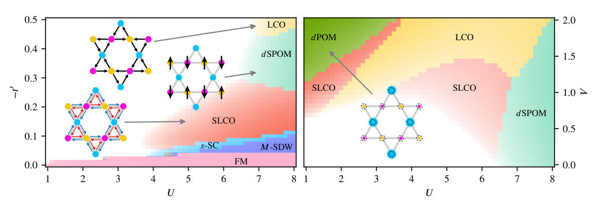
<figcaption class="paper-figure-caption"><b>Fig 2.</b> FIG. 2. FRG phase diagram for varied 𝑡′, 𝑈(at 𝑉= 0, left) and 𝑈, 𝑉(at 𝑡′ = −0.3, right). The color hue encodes the phase, while the intensity corresponds to the critical scale (white: no order, i.e., parabolic semimetallic Fermi liquid phase). The left panel includes visualizations of the loop current order state (LCO, yellow), the 𝑑-wave spin Pomeranchuk instability (𝑑SPOM, aqua), and the spin loop current order state (SLCO, red), where red and blue arrows correspond to the spin-↑and spin-↓loop current, respectively. The lower part of the phase diagram, where the topmost band becomes flat is occupied by a flat-band-ferromagnet (FM, pink), which is flanked by a 𝒒= 𝑀spin density wave (𝑀-SDW,...</figcaption>
</figure>
<figure class="paper-figure-card">
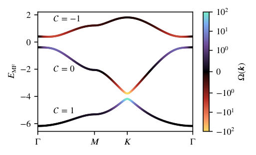
<figcaption class="paper-figure-caption"><b>Fig 3.</b> FIG. 4. Quasiparticle band structure in the loop current phase (LCO) obtained from inserting the LCO eigenvector obtained from FRG as an (ad hoc) mean-field. The bands are colored corresponding to their Berry curvature Ω(𝒌) and we indicate their Chern number on the left. Note that only the absolute value and relative sign of is fixed, as the LCO state features a residual ℤ2 symmetry.</figcaption>
</figure>
<figure class="paper-figure-card">
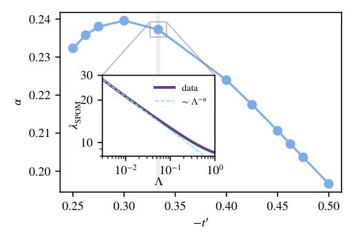
<figcaption class="paper-figure-caption"><b>Fig 4.</b> FIG. 5. Power-law exponent 𝛼of the 𝑑SPOM fluctuations within FRG as a function of 𝑡′ for 𝑈= 8. The FRG flow of the 𝑑SPOM vertex eigenvalue 𝜆SPOM is fitted with a power law (log 𝜆SPOM ≈ −𝛼log Λ + 𝑚) in the region Λ ∈[3 ⋅10−3, 5 ⋅10−3], i.e., at low RG scales. The inset displays one such fit at the approximately particle- hole symmetric point 𝑡′ = −1∕3, which roughly coincides with the maximum of 𝛼(𝑡′).</figcaption>
</figure>
<figure class="paper-figure-card">
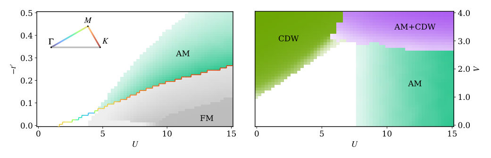
<figcaption class="paper-figure-caption"><b>Fig 5.</b> FIG. 6. SBMF phase diagrams for varied 𝑡′, 𝑈(at 𝑉= 0, left) and 𝑈, 𝑉(at 𝑡′ = −0.3, right). The color hue encodes the phase, while the intensity corresponds to the size of the order parameter. The left panel shows a ferromagnetic (FM) state for small |𝑡′|, favored by the nearly flat band, while for larger negative 𝑡′ the system develops a nematic altermagnetic (AM) spin order consistent with the 𝑑SPOM identified in the FRG analysis. The grey region indicates where the correlated saddle point becomes unstable with respect to transverse spin fluctuations. The colored line encodes the ordering vector 𝑞of the leading instability. In the right panel, onsite repulsion predominantly drives the AM...</figcaption>
</figure>
</div>

<p><strong>Summary.</strong> This work theoretically explores exotic electronic phases in a parabolic Kagome semimetal using sophisticated methods like FRG and SBMF. It demonstrates that the competition between band structure effects, repulsive interactions, and quantum geometry leads to multiple unconventional orders, such as loop-current and altermagnetic states. The findings establish this class of semimetals as a rich platform for studying symmetry breaking in correlated electron systems.</p>
<p><strong>Why it may be interesting.</strong> While focused on condensed matter magnetism/superconductivity, the use of advanced many-body renormalization group techniques (FRG) and slave-boson formalisms provides methodological insights applicable to strongly interacting quantum systems studied in AMO physics.</p>
<details>
<summary>Detailed structure</summary>
<p><strong>Main problem.</strong> The study investigates exotic electronic order in a parabolic Kagome semimetal by mapping its phase diagram across varying interaction strengths.</p>
<p><strong>Main result.</strong> The interplay of band kinematics, quantum geometry, and interactions dictates the emergence of unconventional orders, including loop-current order and spontaneous altermagnetism.</p>
<p><strong>Method.</strong> The research employs advanced theoretical tools like Functional Renormalization Group (FRG) for weak/intermediate coupling and Slave-Boson Mean-Field (SBMF) techniques for strong coupling regimes.</p>
<p><strong>Model / system.</strong> The system is modeled using a generalized Kagome Hubbard model Hamiltonian, tuned to a semimetallic regime at 2/3 filling with onsite ($U$) and nearest-neighbor ($V$) repulsive interactions.</p>
<p><strong>Key observables.</strong> Loop-current order (LCO), spontaneous altermagnetism, spin-loop-current order (SLCO), and various susceptibilities ($\chi$).</p>
<p><strong>Important parameters / regimes.</strong> Filling $
u = 2/3$, onsite repulsion $U$, nearest-neighbor repulsion $V$, and the hopping parameter $t'$ which controls band structure.</p>
<p><strong>Assumptions / limitations.</strong> The FRG analysis utilizes approximations such as discarding frequency dependencies of two-particle vertices, while SBMF methods are limited in describing certain bond orders independently.</p>
<p><strong>Figures summary.</strong> Figure 1 illustrates the non-interacting band structure at $
u=2/3$. Figure 2 presents an FRG phase diagram mapping out various instabilities (SDW, SC, LCO, SLCO) based on $t'$ and interaction strengths. Figure 3 details diagrams showing how interactions promote specific loop current orders.</p>
<p><strong>Paper structure.</strong> The paper systematically analyzes the system using FRG for intermediate coupling to identify initial instabilities, then extends the analysis into strong coupling regimes using SBMF techniques to characterize the full hierarchy of electronic orders.</p>
</details>
<details>
<summary>Abstract</summary>
<p>We study an interacting kagome-lattice realization of a quadratic band-touching semimetal at 2/3 filling with onsite and nearest-neighbor repulsive interactions. Combining functional renormalization group and slave-boson approaches, we map its phase diagram from intermediate to strong coupling and uncover a hierarchy of unconventional electronic orders. The leading instabilities comprise loop-current order, spontaneous altermagnetism arising from a spin-Pomeranchuk instability, and spin-loop-current order with distinctive and largely unexplored properties. We demonstrate how the interplay of band kinematics, electronic interactions, and quantum geometry governs the selection of these phases. Our findings establish quadratic band-touching semimetals as a promising platform for unconventional symmetry breaking and suggest analogous phenomena in other parabolic semimetals.</p>
</details>
<p><sub><a href="#top">↑ back to top</a></sub></p>

<p><a id="paper-2607.18905"></a></p>
<h3 id="energy-conversion-fluctuation-suppression-and-information-transfer-in-the-thermodynamic-performance-of-kinesin"><a href="http://arxiv.org/abs/2607.18905v1">Energy Conversion, Fluctuation Suppression, and Information Transfer in the Thermodynamic Performance of Kinesin</a></h3>
<p><strong>Authors:</strong> Riku Kato, Takayuki Ariga, Tomohiro Tanogami<br>
<strong>Type:</strong> theory · <strong>Category:</strong> statistical mechanics · <strong>PDF:</strong> <a href="https://arxiv.org/pdf/2607.18905v1">https://arxiv.org/pdf/2607.18905v1</a><br>
<strong>Analysis basis:</strong> full PDF text, analyzed in chunks
<strong>Topic relevance:</strong> <code>non-equilibrium dynamics</code> <strong>3/5</strong> · <code>non-equilibrium universality</code> <strong>2/5</strong> · <code>Keldysh / 2PI / non-Gaussian methods</code> <strong>1/5</strong> · <code>correlated / nonlocal dissipation</code> <strong>1/5</strong> · <code>driven-dissipative phase transition</code> <strong>1/5</strong> · <code>entanglement &amp; information structure</code> <strong>1/5</strong> · <code>methods for driven-dissipative</code> <strong>1/5</strong></p>
<div class="figure-strip-hint">↔ Scroll figures horizontally</div>
<div class="paper-figures-scroll">
<figure class="paper-figure-card">
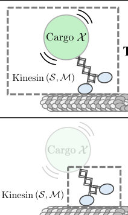
<figcaption class="paper-figure-caption"><b>Fig 1.</b> FIG. 1. Schematic classification of the four efficiencies considered in this work. The efficiencies are classified according to whether they characterize energy conversion or fluctuation suppression, and according to whether they are defined for the total system or for a subsystem. The pair (S, M) represents the kinesin subsystem—comprising the internal state S and the spatial degree of freedom M—while X represents the cargo subsystem, specifically its spatial degree of freedom. Precise definitions are given in Sec. III.</figcaption>
</figure>
<figure class="paper-figure-card">
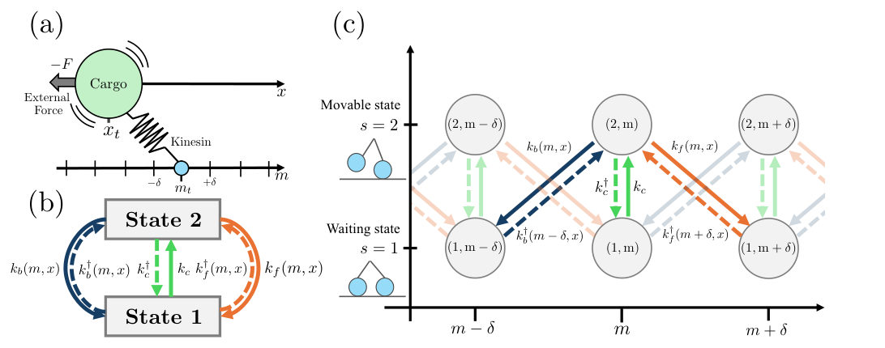
<figcaption class="paper-figure-caption"><b>Fig 2.</b> FIG. 2. Schematic of (a) the kinesin–cargo complex, (b) the two-state kinesin stepper model, and (c) the transition diagram of kinesin governed by the transition matrix. The state s = 1 represents a waiting state where both kinesin heads are bound to the microtubule, whereas the state s = 2 represents a state where one of the heads is detached.</figcaption>
</figure>
<figure class="paper-figure-card">

<figcaption class="paper-figure-caption"><b>Fig 3.</b> FIG. 3. Schematic of the relevant thermodynamic and information-theoretic quantities in our model. Note that ar- rows indicate positive flows under our sign convention.</figcaption>
</figure>
<figure class="paper-figure-card">

<figcaption class="paper-figure-caption"><b>Fig 4.</b> FIG. 4. Force–velocity relationship of single-molecule kinesin motion under the in vitro high-ATP condition. The experi- mental data are cited from Ref. [16]. For the simulation, we use the parameter set given in Appendix B.</figcaption>
</figure>
<figure class="paper-figure-card">

<figcaption class="paper-figure-caption"><b>Fig 5.</b> FIG. 5. F-dependence of the various thermodynamic quantities under the high-ATP condition: (a) −˙Q(S,M), (b) ˙W (S,M), (c) kBT ˙IX→(S,M), (d) −˙QX , (e) −˙W X , and (f) ˙W (S,M)→X . The orange solid line shows the result of the perturbative expansion, while the blue circles and green triangles indicate the numerical results for γ = γvitro and γvivo, respectively. The error bars are smaller than the marker size.</figcaption>
</figure>
</div>

<p><strong>Summary.</strong> The authors developed a unified theoretical framework to compare various thermodynamic efficiencies—including those related to energy conversion and fluctuation suppression—for the kinesin molecular motor. By applying this model to analyze performance under different conditions, they conclude that while multiple metrics can be calculated, kinesin does not appear strongly optimized for maximizing these specific thermodynamic efficiencies.</p>
<p><strong>Why it may be interesting.</strong> This work applies advanced non-equilibrium statistical mechanics tools (like generalized fluctuation theorems) to a complex biological motor, providing quantitative benchmarks for energy transduction efficiency in mesoscopic systems.</p>
<details>
<summary>Detailed structure</summary>
<p><strong>Main problem.</strong> To systematically compare multiple thermodynamic efficiencies characterizing kinesin's performance, as previous studies used different models and assumptions, making quantitative comparisons difficult.</p>
<p><strong>Main result.</strong> The calculated thermodynamic efficiencies generally remain low, suggesting that kinesin is not optimized for maximizing the considered energy conversion or fluctuation suppression metrics.</p>
<p><strong>Method.</strong> Analytical derivation of four types of thermodynamic efficiencies (thermodynamic, information-thermodynamic, TUR, and bipartite TUR) using a thermodynamically consistent two-state model framework.</p>
<p><strong>Model / system.</strong> The system is Kinesin, a molecular motor transporting cargo along microtubules. The dynamics are modeled by a master equation describing the joint probability of kinesin's internal state, position, and the cargo's spatial degree of freedom.</p>
<p><strong>Key observables.</strong> Thermodynamic efficiency ($\eta$), Information-thermodynamic efficiency ($\eta^{	ext{info}}$), TUR efficiency ($\eta_{	ext{TUR}}$), and Bipartite TUR efficiency ($\eta_{BTUR}$).</p>
<p><strong>Important parameters / regimes.</strong> Force (F), ATP concentration (low vs. high), Temperature (T).</p>
<p><strong>Assumptions / limitations.</strong> A thermodynamically consistent two-state kinesin–cargo model is used, assuming a separation of time scales between the motor and cargo degrees of freedom.</p>
<p><strong>Figures summary.</strong> Figures illustrate the force dependence of various efficiencies (TUR and bipartite TUR) for different currents under low-ATP conditions, comparing these to energy conversion metrics.</p>
<p><strong>Paper structure.</strong> The paper establishes a unified framework by deriving analytical expressions for multiple efficiencies. It then calculates how these efficiencies vary with external forces and ATP concentrations, confirming consistency across different regimes.</p>
</details>
<details>
<summary>Abstract</summary>
<p>Kinesin is a molecular motor that transports intracellular cargoes along microtubules. Recent studies have quantified kinesin performance using various efficiencies within the framework of stochastic thermodynamics; however, quantitative comparisons remain difficult because different models and assumptions have been employed. As a result, it remains unclear which aspect of kinesin performance, if any, is thermodynamically optimized. Here, we systematically compare multiple thermodynamic efficiencies within a single kinesin-cargo model. To this end, we construct a thermodynamically consistent two-state kinesin-cargo model that retains both the discrete stepping of kinesin and its coupling to the cargo. Assuming a separation of time scales between the motor and the cargo, we derive analytical expressions for the thermodynamic efficiency, the information-thermodynamic efficiency, the thermodynamic uncertainty relation (TUR) efficiency, and the bipartite TUR efficiency, and compare them with numerical simulation results. We find that these efficiencies generally remain low, suggesting that kinesin is not optimized for maximizing the thermodynamic efficiencies considered here. Our results suggest that thermodynamic efficiencies alone may not fully characterize kinesin performance and motivate further investigation of complementary kinetic perspectives for assessing molecular motor function.</p>
</details>
<p><sub><a href="#top">↑ back to top</a></sub></p>

<p><a id="paper-2607.19279"></a></p>
<h3 id="gaussian-boson-sampling-for-asset-clustering-in-statistical-arbitrage-portfolios"><a href="http://arxiv.org/abs/2607.19279v1">Gaussian Boson Sampling for Asset Clustering in Statistical Arbitrage Portfolios</a></h3>
<p><strong>Authors:</strong> Dayne Marcus Lopena, Daniel Buguks, Zhenghao Li, Ewan Mer, Shana H. Winston, Shang Yu, Mihai Cucuringu, Del Rajan, Philip Intallura, Raj B. Patel<br>
<strong>Type:</strong> both · <strong>Category:</strong> other · <strong>PDF:</strong> <a href="https://arxiv.org/pdf/2607.19279v1">https://arxiv.org/pdf/2607.19279v1</a><br>
<strong>Analysis basis:</strong> full PDF text, analyzed in chunks
<strong>Topic relevance:</strong> <code>interference shaping light</code> <strong>3/5</strong> · <code>quantum optics experiment</code> <strong>3/5</strong> · <code>analog quantum simulation</code> <strong>1/5</strong> · <code>driven-dissipative phase transition</code> <strong>1/5</strong> · <code>entanglement &amp; information structure</code> <strong>1/5</strong> · <code>methods for driven-dissipative</code> <strong>1/5</strong></p>
<div class="figure-strip-hint">↔ Scroll figures horizontally</div>
<div class="paper-figures-scroll">
<figure class="paper-figure-card">

<figcaption class="paper-figure-caption"><b>Fig 1.</b> Figure 1: Overview of the GBS-driven StatArb framework. (a) Stock data is processed to construct a residual-return correlation matrix. Zeroing the main diagonal yields the adjacency matrix of the correlation graph. (b) The GBS clustering procedure. The correlation graph is encoded into a GBS device through its adjacency matrix. The device generates subgraph samples, which are evaluated against an edge-weight criterion to select the highest-scoring cluster. This selected subgraph is then removed from the graph to produce a residual graph, and the process is iteratively applied to generate a complete partition of the correlation network. (c) Application to StatArb. The initial graphs...</figcaption>
</figure>
<figure class="paper-figure-card">

<figcaption class="paper-figure-caption"><b>Fig 2.</b> Figure 2: Overview of the GBS Roots process. (a) An initial correlation graph G, with specific correlations and stock labels omitted for clarity. (b) The correlation graph is sampled using a GBS device to generate candidate subgraphs. (c) The weighted density of the samples is calculated. A cluster U = S α ˜qα is formed by iteratively expanding a disjoint union of these samples, ensuring all ˜qα remain mutually disjoint while recording the utilised nodes. (d) This union expansion terminates if for the next sample in the queue qi+1, the union would no longer be disjoint, and the total WD does not increase. (e) Removing the finalised cluster yields the residual graph G \ U. (f) This residual...</figcaption>
</figure>
<figure class="paper-figure-card">

<figcaption class="paper-figure-caption"><b>Fig 3.</b> Figure 3: Cumulative PnL trajectories and standard deviations (coloured bands) for each algorithm. Based on a 60-day beta estimation and a 5-day correlation matrix lookback (Appendix A), the effective trading period begins in April 2020. GBS Boost, GBS Roots, and QIC-GBS utilised 0.7N log N, 0.6N log N, and N log N samples (See Appendix G) per GBS call, respectively.</figcaption>
</figure>
<figure class="paper-figure-card">

<figcaption class="paper-figure-caption"><b>Fig 4.</b> Figure 4: Performance of GBS-inspired clustering methods under photon loss, with and without displacement compensation. Quantum methods underwent 50 runs per loss rate (H = 0.7N log N samples per GBS call); classical methods underwent 100-200 runs. The stock universe is N = 50. The top row (a-c) displays uncompensated loss results, while the bottom row (d-f) incorporates displacement compensation. Classical benchmarks are shown as solid horizontal lines. Panels (a) and (d) show average total returns with standard deviations (coloured bands). Panels (b) and (e) display median weighted densities and interquartile ranges, accounting for left-skewed data. Panels (c) and (f) depict average...</figcaption>
</figure>
<figure class="paper-figure-card">

<figcaption class="paper-figure-caption"><b>Fig 5.</b> Figure 5: Clustering method performance across disparate market regimes using a 50-stock universe. (Left) Total return of all cluster- ing methods alongside a benchmark for 2008, 2017, 2020, and 2022. (Right) Comparison of algorithm Sharpe ratios against the average S&amp;P 500 Volatility Index (VIX) per regime. Quantum methods utilised H = 0.7N log N samples per GBS call.</figcaption>
</figure>
</div>

<p><strong>Summary.</strong> This work pioneers the use of Gaussian Boson Sampling (GBS) to cluster assets within financial portfolios for statistical arbitrage. By mapping correlation matrices into photonic graph structures, the authors propose quantum algorithms that outperform classical methods during volatile market conditions. It establishes a novel quantum heuristic framework linking quantum optics to quantitative finance.</p>
<p><strong>Why it may be interesting.</strong> While applied to finance, the core mechanism involves simulating complex many-body interactions (photon interference) via GBS to solve a combinatorial optimization problem (graph clustering), which is relevant to understanding resource limitations in quantum simulation for structured data analysis.</p>
<details>
<summary>Detailed structure</summary>
<p><strong>Main problem.</strong> The paper applies Gaussian Boson Sampling (GBS) to solve the Max-Agree Correlation Clustering Problem (MACCP) for constructing robust Statistical Arbitrage (StatArb) portfolios.</p>
<p><strong>Main result.</strong> Quantum clustering methods using GBS generate superior alpha during high volatility periods compared to classical algorithms, establishing a quantum foundation for quantitative finance applications.</p>
<p><strong>Method.</strong> The authors map asset correlation data into adjacency matrices and use specialized quantum algorithms (GBS Boost, GBS Roots) that leverage GBS sampling to iteratively find optimal dense subgraphs representing co-moving assets.</p>
<p><strong>Model / system.</strong> The physical model is based on Gaussian Boson Sampling using squeezed vacuum states interfering in a linear interferometer. The process simulates the measurement of photon statistics proportional to the hafnian of the correlation submatrix.</p>
<p><strong>Key observables.</strong> Alpha generation, Sharpe Ratio (ShR), Sortino Ratio (SoR), Weighted Density (WD), and Jaccard similarity across rolling time windows.</p>
<p><strong>Important parameters / regimes.</strong> Universe size ($N$), photon loss factor ($\eta$), required sample budget $H = O(N \log N)$, and the correlation matrix derived from S&amp;P 500 residuals.</p>
<p><strong>Assumptions / limitations.</strong> The primary assumption is that maximizing intra-cluster correlations (MACCP) directly translates to profitable arbitrage signals. Furthermore, quantum advantage demonstrations are heuristic, not complexity-theoretic proofs.</p>
<p><strong>Figures summary.</strong> Figures illustrate the GBS-driven StatArb framework, showing data processing, iterative clustering procedures (GBS Roots), and performance comparisons across varying stock universes ($N$).</p>
<p><strong>Paper structure.</strong> The paper introduces the problem by linking graph clustering to StatArb. It details mapping correlation matrices to GBS inputs, presents quantum algorithms like GBS Roots for MACCP, benchmarks these against classical methods using financial metrics, and analyzes scaling limits.</p>
</details>
<details>
<summary>Abstract</summary>
<p>Gaussian Boson Sampling (GBS) provides a native photonic quantum heuristic for sampling dense subgraphs from adjacency matrices, offering a scalable physical approach to combinatorial graph search problems. Simultaneously, correlation matrix clustering algorithms, such as Spectral and SPONGE, have established robust benchmarks for identifying co-moving assets from correlation matrices in statistical arbitrage (StatArb) strategies. In this work, we map S&amp;P 500 residual correlation data into GBS-compatible adjacency matrices. We benchmark those classical clustering algorithms against two quantum clustering algorithms, GBS Boost and our novel GBS Roots, to construct dynamic, market-neutral portfolios over a rolling one-year window. Simulations across distinct macroeconomic regimes reveal that quantum clustering generates superior alpha within large stock universes during periods of high volatility, effectively isolating structural market idiosyncrasies. Crucially, this economic advantage persists under simulated low-loss conditions and extends into high-loss regimes via the application of coherent displacement to compensate for photon loss. Our findings underscore the efficacy of GBS-derived graph clustering in constructing robust StatArb portfolios, establishing a quantum foundation for broader quantitative finance applications.</p>
</details>
<p><sub><a href="#top">↑ back to top</a></sub></p>

<p><a id="paper-2607.18740"></a></p>
<h3 id="quantum-sensing-of-low-frequency-electric-signal-enabled-by-modulated-auxiliary-field-in-rydberg-atoms"><a href="http://arxiv.org/abs/2607.18740v1">Quantum sensing of low-frequency electric signal enabled by modulated auxiliary field in Rydberg atoms</a></h3>
<p><strong>Authors:</strong> Xiayang Fan, Shenchao Jin, Jiatian Liu, Jialiang Zhang, Qichao Qi, Yuan Sun<br>
<strong>Type:</strong> experiment · <strong>Category:</strong> other · <strong>PDF:</strong> <a href="https://arxiv.org/pdf/2607.18740v1">https://arxiv.org/pdf/2607.18740v1</a><br>
<strong>Analysis basis:</strong> full PDF text, analyzed in chunks
<strong>Topic relevance:</strong> <code>interference shaping light</code> <strong>3/5</strong> · <code>quantum optics experiment</code> <strong>3/5</strong> · <code>Rydberg arrays</code> <strong>2/5</strong> · <code>analog quantum simulation</code> <strong>1/5</strong> · <code>quantum measurements</code> <strong>1/5</strong></p>
<div class="figure-strip-hint">↔ Scroll figures horizontally</div>
<div class="paper-figures-scroll">
<figure class="paper-figure-card">

<figcaption class="paper-figure-caption"><b>Fig 1.</b> FIG. 1. (a) Schematic diagram of the proposed approach of modulated auxiliary field with weak-measurement-enhanced readout. In our experiment, the auxiliary field and the signal field are both applied to the copper plates to simulate real-world application scenarios [44]. (b) Principles of the modulated auxiliary field and QFM, including the relevant atomic levels and transitions. (c) Signal reconstruction process. P: polarizer, DM: dichroic mirror, HWP: half-wave plate, QWP: quarter-wave plate, PD: photodiode.</figcaption>
</figure>
<figure class="paper-figure-card">

<figcaption class="paper-figure-caption"><b>Fig 2.</b> FIG. 2. Demodulated signal magnitude as a function of the auxiliary field amplitude Ea, demodulated at (a) 2ωa and (b) ω−. Error bars represent one standard deviation from five independent experiments. Dashed lines show a quadratic fit in (a) and a linear fit in (b).</figcaption>
</figure>
<figure class="paper-figure-card">

<figcaption class="paper-figure-caption"><b>Fig 3.</b> FIG. 3. (a) Reconstructed signal amplitude as a function of the signal electric field amplitude. (b) Minimal detectable field versus integration time. (c) Sensitivity as a function of signal frequency. (d) Experimentally measured frequency de- pendent screening ratio η. Error bars represent one standard deviation from five independent measurements.</figcaption>
</figure>
<figure class="paper-figure-card">

<figcaption class="paper-figure-caption"><b>Fig 4.</b> FIG. 4. SNR histograms for the individual auxiliary frequency components and their MRC combination. Data are shown for auxiliary tones at (a) 25 kHz, 31 kHz and 37 kHz (common amplitude of 0.27 V/cm); (b) 10 kHz, 20 kHz and 30 kHz (common amplitude of 0.18 V/cm). Error bars represent one standard deviation from five independent measurements.</figcaption>
</figure>
</div>

<p><strong>Summary.</strong> The paper introduces an advanced quantum sensing technique for measuring weak, low-frequency electric fields using Rydberg atoms. By employing a modulated auxiliary AC field and leveraging Quantum Frequency Mixing (QFM), the method generates a measurable cross-term Stark shift read out via EIT. This approach significantly improves stability and sensitivity compared to older methods, establishing a robust platform for next-generation quantum sensors.</p>
<p><strong>Why it may be interesting.</strong> This work is highly relevant as it adapts established quantum optics techniques (QFM) from RF/MW regimes into the challenging low-frequency electric field domain using Rydberg atoms, providing a stable alternative to traditional DC biasing methods.</p>
<details>
<summary>Detailed structure</summary>
<p><strong>Main problem.</strong> To develop a quantum sensing scheme for low-frequency (LF) electric signals that overcomes the inherent instability and calibration issues of conventional DC bias field methods.</p>
<p><strong>Main result.</strong> The authors demonstrated high sensitivity ($7.5 \pm 2.6 \, \mu	ext{V}/(	ext{cm} \cdot 	ext{Hz}^{1/2})$ at $5 \, 	ext{kHz}$) and achieved a minimal detectable field of $0.26 \pm 0.04 \, \mu	ext{V}/	ext{cm}$ after long integration times.</p>
<p><strong>Method.</strong> The scheme uses Quantum Frequency Mixing (QFM) by modulating an auxiliary AC field ($   ext{E}<em ext_sig="ext{sig">{    ext{aux}}$), allowing the incoming LF signal ($    ext{E}</em>$) to mix with it. This shift is then read out via Electromagnetically Induced Transparency (EIT).}</p>
<p><strong>Model / system.</strong> The physical platform is Rydberg atoms in an atomic vapor cell, utilizing a second-order Stark shift induced by the total electric field ($ ext{E}_{    ext{tot}}$). The detection relies on mapping the resulting energy shift onto the probe laser intensity via EIT.</p>
<p><strong>Key observables.</strong> Transmitted light intensity $I(t)$, which is related to the cross-term Stark shift $\delta_{	ext{cr}}$, and the reconstructed signal amplitude $|Z|$.</p>
<p><strong>Important parameters / regimes.</strong> Sensitivity of $7.5 \pm 2.6 \, \mu	ext{V}/(	ext{cm} \cdot 	ext{Hz}^{1/2})$ at $5 \, 	ext{kHz}$; minimal detectable field $\propto T^{-0.48}$ with integration time $T$.</p>
<p><strong>Assumptions / limitations.</strong> The method assumes the cross-term ($\delta_{	ext{cr}}$) dominates and is linearly proportional to the signal field, allowing for robust reconstruction.</p>
<p><strong>Figures summary.</strong> Figure 1 illustrates the experimental setup, the principle of modulated auxiliary fields and QFM, and the signal reconstruction process. Figure 2 details the verification of the cross-term using combined fields and the subsequent signal reconstruction method.</p>
<p><strong>Paper structure.</strong> The paper introduces the problem with conventional methods, proposes the AC modulation/QFM scheme, details the theoretical modeling (cross-term generation), presents experimental validation for LF signals, extends the concept to multi-frequency analysis via Maximal Ratio Combining (MRC), and concludes by establishing a robust framework.</p>
</details>
<details>
<summary>Abstract</summary>
<p>Rydberg atoms have emerged as a versatile and efficient platform for high-sensitivity quantum sensing of free-space electric fields, with remarkable progress in detecting low-frequency signals. To date, low-frequency Rydberg receivers have relied on a constant bias field, typically realized via intra-cell electrodes or Rydberg plasmas generated by photoelectric effects or inter-atomic interactions. While these approaches improve sensitivity, they suffer from inherent challenges in calibration, long-term stability, and robustness, hindering practical deployment. Here, we propose, design, and experimentally demonstrate a quantum sensing scheme for low-frequency electric signals using modulated auxiliary fields in Rydberg atoms. Unlike conventional methods that employ external DC electric fields that are often fully shielded by adsorbed atom layers on the cell walls, we introduce an AC-field modulation strategy. The incoming low-frequency signal mixes with the auxiliary field, and together they induce Stark shifts of the Rydberg level. These shifts are mapped onto the probe laser via electromagnetically induced transparency (EIT), in a manner analogous to heterodyne detection. We demonstrate a sensitivity of $7.5 \pm 2.6~\mathrm{μV/(cm\cdot Hz^{1/2})}$ at 5 kHz and a minimal detectable field of $0.26 \pm 0.04~\mathrm{μV/cm}$ with an integration time of 1000 s. Furthermore, we extend this approach to systematically analyze the performance of generalized auxiliary fields containing multiple frequency components. By virtue of modulated auxiliary field and quantum frequency mixing, our results establish a robust and systematic framework for quantum sensing of low-frequency electric fields with Rydberg atoms, offering improved sensitivity, stability, and immunity to environmental drifts.</p>
</details>
<p><sub><a href="#top">↑ back to top</a></sub></p>

<p><a id="paper-2607.18757"></a></p>
<h3 id="self-consistent-gw-theory-for-superconductivity-in-srtio3-models"><a href="http://arxiv.org/abs/2607.18757v1">Self-consistent GW theory for superconductivity in SrTiO3 models</a></h3>
<p><strong>Authors:</strong> Zhi-Hao Cui, John Sous, Andrew J. Millis, David R. Reichman<br>
<strong>Type:</strong> theory · <strong>Category:</strong> strongly correlated electrons · <strong>PDF:</strong> <a href="https://arxiv.org/pdf/2607.18757v1">https://arxiv.org/pdf/2607.18757v1</a><br>
<strong>Analysis basis:</strong> full PDF text, analyzed in chunks
<strong>Topic relevance:</strong> <code>Keldysh / 2PI / non-Gaussian methods</code> <strong>3/5</strong> · <code>analog quantum simulation</code> <strong>1/5</strong> · <code>correlated / nonlocal dissipation</code> <strong>1/5</strong> · <code>correlated cavity matter</code> <strong>1/5</strong> · <code>driven-dissipative phase transition</code> <strong>1/5</strong> · <code>methods for driven-dissipative</code> <strong>1/5</strong> · <code>non-equilibrium dynamics</code> <strong>1/5</strong> · <code>non-equilibrium universality</code> <strong>1/5</strong></p>
<div class="figure-strip-hint">↔ Scroll figures horizontally</div>
<div class="paper-figures-scroll">
<figure class="paper-figure-card">

<figcaption class="paper-figure-caption"><b>Fig 1.</b> FIG. 1. (A) Electronic energy scales of the three-mode model across the density range, for m D 2:1me and 1 D 6:16: Fermi energy EF, plasma frequency !pl D .4n=1m/1=2, and Thomas-Fermi energy ETF D q2 TF=2m, compared with the softest TO and highest LO reference scales of Eq. (2). The vertical line marks EF D !LO;max D 102:14 meV at n  4:51  1020 cm3. (B) Lattice dielectric factor F3.n/ multiplying the 1-screened Coulomb interaction in Eq. (2). Arrows mark the static and high-frequency limits, V.q; 0/ D 4 0q2 and</figcaption>
</figure>
<figure class="paper-figure-card">

<figcaption class="paper-figure-caption"><b>Fig 2.</b> Fig. 2(A) shows the leading pairing eigenvalue at T D 1 K across seven decades of density. The one-shot G0W0 kernel gives a broad instability, with  rising from 2:24 at 1016 cm3</figcaption>
</figure>
<figure class="paper-figure-card">

<figcaption class="paper-figure-caption"><b>Fig 3.</b> Fig. 1 organizes the discussion. Panel (A) compares the density-dependent electronic scales with the fixed polar- phonon scale. The Fermi energy crosses the LO pole range (21.80 - 102.14 meV) as the density is increased through the range 4:45  1019 and 4:51  1020 cm3, so the entire low- density flank of the experimental dome is antiadiabatic with respect to most of the polar spectral weight. The plasma fre- quency crosses the same LO range between 4:46  1018 and 9:79  1019 cm3, so the importance of electronic screen- ing changes across the dome. Panel (B) shows the cor- responding frequency profile of the bare interaction factor: F3.0/ D 1=0 D 2:68  104 at the static end, while...</figcaption>
</figure>
<figure class="paper-figure-card">

<figcaption class="paper-figure-caption"><b>Fig 4.</b> FIG. 2. (A) Leading eigenvalue  of the linearized gap equation at T D 1 K as a function of carrier density for the one-shot (G0W0), partially self-consistent (GW0), and fully self-consistent (scGW ) kernels. The dashed line marks the instability condition  D 1. (B) Eliashberg renormalization function Z.kF; iT / of Eq. (11) for the two self-consistent methods. (C) Kernel-suppression analysis: the eigenvalue ratio G0W0=GW0 compared with Z2 of the GW0 solution. Z2 gives the expected near-Fermi-surface suppression scale and reproduces the density dependence.</figcaption>
</figure>
<figure class="paper-figure-card">

<figcaption class="paper-figure-caption"><b>Fig 5.</b> FIG. 3. (A) Decomposition of the pairing kernel at T D 1 K. The plotted decompositions show G0V and GV, which remove the electronic polarization (…  0) while keeping the lattice dielectric factor, and the one-shot no-phonon kernel, which sets F3./ D 1 and leaves a pure Coulomb interaction screened only electronically. (B) Momentum-averaged leading gap eigenfunction of the fully self-consistent scGW kernel versus Matsubara frequency at three densities (normalized to its high-frequency value). The sign change sits within the polar-phonon scale window (nodes at 30, 71, and 102 meV for the three densities; dotted lines mark the LO poles); short colored vertical ticks mark EF (solid) and !pl...</figcaption>
</figure>
</div>

<p><strong>Summary.</strong> This work develops a sophisticated theoretical framework to model unconventional superconductivity in doped SrTiO3. It shows that standard theories fail when carrier density is low, necessitating a fully self-consistent GW treatment incorporating phonon renormalization. The key finding pinpoints the pairing mechanism as being governed by incipient ferroelectricity and full momentum dependence.</p>
<p><strong>Why it may be interesting.</strong> While focused on solid-state superconductivity, the rigorous treatment of strong electron-phonon coupling and the necessity of full momentum/frequency dependence mirrors challenges in modeling open quantum systems where simple approximations fail near critical points.</p>
<details>
<summary>Detailed structure</summary>
<p><strong>Main problem.</strong> The study addresses superconductivity in doped SrTiO3 when the Fermi energy is below the polar LO phonon scale, a regime where conventional Migdal-Eliashberg theory assumptions break down.</p>
<p><strong>Main result.</strong> The pairing mechanism is identified as the Fröhlich phonon interaction screened by incipient ferroelectricity. Full self-consistent calculations are necessary to accurately predict the superconducting transition temperature ($T_c$).</p>
<p><strong>Method.</strong> The authors solve the finite-temperature GW equations with full momentum and frequency dependence, solving a linearized pairing eigenvalue problem.</p>
<p><strong>Model / system.</strong> The system is doped SrTiO3 modeled by a single isotropic parabolic conduction band interacting via Coulomb repulsion and coupling to three polar lattice vibrations. The analysis uses effective masses and phonon dielectric functions derived from ab initio calculations.</p>
<p><strong>Key observables.</strong> Pairing-onset temperature ($T_c$), pairing channel, renormalization factor ($Z$).</p>
<p><strong>Important parameters / regimes.</strong> Carrier density (especially the dilute limit $n 	o 0$), Fermi energy relative to LO phonon scale, and self-consistency level ($  ext{G}_0    ext{W}_0$ vs. $ ext{scGW}$).</p>
<p><strong>Assumptions / limitations.</strong> The primary approximations involve comparing different levels of self-consistency ($G_0W_0$, $GW_0$, fully self-consistent GW) and assuming a single isotropic parabolic band model.</p>
<p><strong>Paper structure.</strong> The paper develops the theory by first identifying the failure points of existing models in the low-density regime, then systematically comparing results across different levels of theoretical approximation (self-consistency), leading to the final identification of the dominant pairing interaction.</p>
</details>
<details>
<summary>Abstract</summary>
<p>Superconductivity in doped SrTiO$_3$ occurs over a wide range of carrier densities, including those for which the Fermi energy is below the polar longitudinal optical phonon scale. In this regime, the assumptions underpinning conventional implementations of Migdal-Eliashberg theory, including frequency cutoffs at the phonon scale and a Coulomb pseudopotential $μ^\ast$, are not valid. We solve the finite-temperature $GW$ equations with full momentum and frequency dependence, without cutoffs or $μ^\ast$, for polar one-band models of SrTiO$_3$, using effective masses and three-phonon dielectric functions parameterized from ab initio calculations. Comparing different self-consistency levels, namely $G_0W_0$, $GW_0$, and fully self-consistent $GW$, we find that the one-shot ($G_0W_0$) kernel overestimates the pairing-onset temperature by one to two orders of magnitude. The dominant suppression comes from replacing $G_0$ by $G$, thereby incorporating the phonon renormalization factor in the electron Green function. Using the self-consistently computed interaction $W$ further lowers and narrows the pairing-onset dome. In the dilute limit, our calculations identify the pairing channel as the Fröhlich phonon interaction screened by the incipient ferroelectricity of the material, with plasmonic and electronic screening effects negligible. The numerical solution of the full equations reveals a pairing-onset scale that remains non-zero as the density tends to zero, whereas Fermi-surface projection or Fermi-energy frequency truncation removes it. This work highlights the relevance of incipient ferroelectricity, the importance of self-consistency, and the need for a full momentum- and frequency-dependent treatment in modeling superconductivity in SrTiO$_3$-like doped polar semiconductors.</p>
</details>
<p><sub><a href="#top">↑ back to top</a></sub></p>

<p><a id="paper-2607.18686"></a></p>
<h3 id="incommensurate-modulation-with-math549math-a-type-antiferromagnetic-order-in-cerhmath550mathasmath551math-revealed-by-nqr-studies"><a href="http://arxiv.org/abs/2607.18686v1">Incommensurate modulation with $Q=0$ A-type Antiferromagnetic Order in CeRh$_2$As$_2$ revealed by NQR studies</a></h3>
<p><strong>Authors:</strong> Shiki Ogata, Shunsaku Kitagawa, Kenji Ishida, Manuel Brando, Elena Hassinger, Christoph Geibel, Seunghyun Khim<br>
<strong>Type:</strong> experiment · <strong>Category:</strong> strongly correlated electrons · <strong>PDF:</strong> <a href="https://arxiv.org/pdf/2607.18686v1">https://arxiv.org/pdf/2607.18686v1</a><br>
<strong>Analysis basis:</strong> full PDF text, analyzed in chunks
<strong>Topic relevance:</strong> <code>exotic spin models in light-matter</code> <strong>3/5</strong> · <code>spintronics-quantum-optics interface</code> <strong>3/5</strong> · <code>Frenkel-Kontorova</code> <strong>2/5</strong> · <code>Kondo &amp; dissipative impurity</code> <strong>1/5</strong></p>
<div class="figure-strip-hint">↔ Scroll figures horizontally</div>
<div class="paper-figures-scroll">
<figure class="paper-figure-card">

<figcaption class="paper-figure-caption"><b>Fig 1.</b> FIG. 1. (a) Magnetic structure of CeRh2As2 [24]. (b)(c) The normal state 75As-NQR spectra of the As(1) site and As(2) site, respectively. The red curves are NQR spectra of the higher-quality sample (New), and the black lines are those of the early-stage sample (Previous). (d) Temperature dependence of ac susceptibility measurements at zero field. The red arrow indicates the SC transition temperature TSC estimated from the onset of the SC diamagnetic signal.</figcaption>
</figure>
<figure class="paper-figure-card">

<figcaption class="paper-figure-caption"><b>Fig 2.</b> FIG. 2. The temperature evolutions of the 75As-NQR spectrum of (a)the As(2) and (b)As(1) sites in CeRh2As2. (c) The temperature evolution of the spectrum intensity (I) times temperature (T ) (left axis) and nuclear spin-spin relaxation rate 1/T2 at the As(2) site (right axis). (d) The temperature evolutions of estimated internal field Hint at the each As site. Hint at the As(2) site is estimated from spectrum splitting (Hint = 1</figcaption>
</figure>
<figure class="paper-figure-card">

<figcaption class="paper-figure-caption"><b>Fig 3.</b> FIG. 3. The NMR spectra at 0.6 K (normal state) and lowest temperature (SC and AFM state) under (a) the c-axis field 1.2 T and (b)(c) [110] direction field. The dotted curves is the results of Gaussian fitting.</figcaption>
</figure>
<figure class="paper-figure-card">

<figcaption class="paper-figure-caption"><b>Fig 4.</b> FIG. 4. Possible NQR spectrum with (a) commensurate, (b) 1D-incommensurate (Hint ∝cos (q · r)), and (c) 2D- incommensurate (Hint ∝cos (q1 · r)·cos (q2 · r)) internal field distribution. Black dotted curves and red solid curves rep- resent the simulated spectra with small and large broaden- ing factor, respectively. (d)(e) Simulated NQR spectrum in the AFM state at the As(1) site and the As(2) site, respec- tively. The magnetic structure we used for the simulation is in-plane two-dimensional incommensurate modulation with the magnetic structure illustrated in Fig. 1(a). Blue solid curves represent the experimental results in the lowest tem- perature. Black dotted curves and red solid curves...</figcaption>
</figure>
</div>

<p><strong>Summary.</strong> This work uses NQR/NMR measurements on CeRh2As2 to characterize its magnetic state. The findings reveal a complex magnetic structure involving both A-type antiferromagnetism and an incommensurate modulation. Crucially, the study establishes a strong link between this magnetic ordering and the superconducting phase, suggesting that magnetism plays a pivotal role in the material's electronic properties.</p>
<p><strong>Why it may be interesting.</strong> The strong coupling between magnetism and superconductivity, particularly the observation that the onset of static AFM order coincides with or immediately follows the superconducting transition, is a key topic in strongly correlated electron physics relevant to unconventional superconductors.</p>
<details>
<summary>Detailed structure</summary>
<p><strong>Main problem.</strong> The study investigates the nature of magnetic order (A-type Antiferromagnetism) and its interplay with superconductivity in the heavy-fermion superconductor CeRh2As2.</p>
<p><strong>Main result.</strong> NQR studies reveal that the magnetic structure is a combination of a Q=0 A-type AFM component overlaid by a two-dimensional incommensurate modulation. The close proximity of the AFM transition temperature (TN) to the superconducting transition temperature (TSC) is highlighted.</p>
<p><strong>Method.</strong> The research employs high-quality single-crystal measurements using Nuclear Quadrupole Resonance (NQR) and Nuclear Magnetic Resonance (NMR) spectroscopy on the As site.</p>
<p><strong>Model / system.</strong> The physical system is CeRh2As2, a heavy-fermion superconductor with a noncentrosymmetric crystal structure. The magnetic state is modeled as having both a Q=0 A-type AFM component and an incommensurate modulation.</p>
<p><strong>Key observables.</strong> NQR spectral splitting (at As(2)), NQR intensity evolution, internal magnetic field strength (H_int), and the temperature dependence of these quantities near T0 and TN.</p>
<p><strong>Important parameters / regimes.</strong> Superconducting transition temperature (T_SC), Antiferromagnetic transition temperature (T_N), and fluctuation onset temperature (T_0).</p>
<p><strong>Assumptions / limitations.</strong> The analysis assumes that the observed magnetic transitions are robust features of the material, though early-stage sample inhomogeneity is noted as a limitation.</p>
<p><strong>Figures summary.</strong> Figures compare NQR spectra between different crystal quality samples; others show the temperature evolution of spectral features and internal fields across multiple transition points (T0, TN, TSC).</p>
<p><strong>Paper structure.</strong> The paper progresses by characterizing the superconducting phases, then analyzing the magnetic transitions using NQR/NMR data. It establishes the coexistence of incommensurate modulation on top of A-type AFM order, linking these magnetic features to the SC state.</p>
</details>
<details>
<summary>Abstract</summary>
<p>We performed $^{75}$As nuclear quadrupole resonance (NQR) and nuclear magnetic resonance (NMR) measurements on a higher-quality single-crystalline CeRh$_2$As$_2$, a heavy-fermion superconductor exhibiting multiple superconducting (SC) phases under magnetic fields along the $c$ axis. This SC multiphase is believed to originate from staggered Rashba spin-orbit coupling associated with locally broken inversion symmetry. In addition to superconductivity, CeRh$_2$As$_2$ exhibits phase I below $T_0\sim0.5$ K and an antiferromagnetic (AFM) state below $T_{N}\sim 0.25$ K in the early-stage samples. In the higher-quality sample, the AFM transition becomes more pronounced, and $T_{N}$ increases to nearly coincide with $T_{SC}$. The NQR spectra at the As(1) site imply an internal field with an incommensurate distribution, indicating a two-dimensional incommensurate modulation of the magnetic structure superimposed on a $Q=0$ A-type AFM component. Moreover, a pronounced decrease in the NQR intensity at $T_0$ well-above $T_{N}$ and an abrupt increase in the internal field at $T_{N}$ suggest the emergence of a slowly fluctuating AFM order at $T_0$ which becomes static at $T_{N}$.</p>
</details>
<p><sub><a href="#top">↑ back to top</a></sub></p>

<p><a id="paper-2607.18925"></a></p>
<h3 id="phase-equilibria-in-mnsb2te4-gesb2te4-system-and-magnetic-properties-of-mn1-xgexsb2te4-solid-solutions"><a href="http://arxiv.org/abs/2607.18925v1">Phase equilibria in MnSb2Te4-GeSb2Te4 system and magnetic properties of Mn1-xGexSb2Te4 solid solutions</a></h3>
<p><strong>Authors:</strong> Fuad Safarov, Dunya Babanly, Jerome Robert, Elnur Orujlu, Elvin Ahmadov, Martin Bowen, Bohdan Kundys<br>
<strong>Type:</strong> experiment · <strong>Category:</strong> strongly correlated electrons · <strong>PDF:</strong> <a href="https://arxiv.org/pdf/2607.18925v1">https://arxiv.org/pdf/2607.18925v1</a><br>
<strong>Analysis basis:</strong> full PDF text, analyzed in chunks
<strong>Topic relevance:</strong> <code>exotic spin models in light-matter</code> <strong>3/5</strong> · <code>spintronics-quantum-optics interface</code> <strong>3/5</strong> · <code>analog quantum simulation</code> <strong>2/5</strong> · <code>Kondo &amp; dissipative impurity</code> <strong>1/5</strong></p>
<div class="figure-strip-hint">↔ Scroll figures horizontally</div>
<div class="paper-figures-scroll">
<figure class="paper-figure-card">

<figcaption class="paper-figure-caption"><b>Fig 1.</b> Fig. 1. Temperature profile applied during synthesis of the MGST-124 samples. A ramp rate of 7.5 K/min was used. Temperature is given in Kelvin (K), while time is expressed in hours (h).</figcaption>
</figure>
<figure class="paper-figure-card">

<figcaption class="paper-figure-caption"><b>Fig 2.</b> Fig. 2. Crystal structure of the parent compound MnSb2Te4. The unit cell is outlined in dark black. Blue, red, and green spheres represent Mn, Sb, and Te atoms, respectively. The hexagonal or in-plane view is shown in (a), while the rhombohedral or out-of-plane view is indicated in (b). (For interpretation of the references to colour in this figure legend, the reader is referred to the web version of this article.)</figcaption>
</figure>
<figure class="paper-figure-card">

<figcaption class="paper-figure-caption"><b>Fig 3.</b> Fig. 3. Room-temperature PXRD patterns of the MGST-124 samples with different Ge substitutions (x). The intensity is given in arbitrary units (a.u.), while the angle is expressed in 2θ.</figcaption>
</figure>
<figure class="paper-figure-card">

<figcaption class="paper-figure-caption"><b>Fig 4.</b> Fig. 4. Lattice parameters a, b, (a = b) and c, along with the unit cell volume V in the Mn1-xGexSb2Te4 samples as functions of Ge substitution (x). Lattice parameters are given in ångstr¨oms (Å), while the unit cell volume is expressed in cubic ångstr¨oms (Å3).</figcaption>
</figure>
<figure class="paper-figure-card">

<figcaption class="paper-figure-caption"><b>Fig 5.</b> Fig. 5. T–x phase diagram of the MnSb2Te4 – GeSb2Te4 system. The tempera- ture is given in Kelvin (K), and the composition is expressed in mol % of GeSb2Te4. The region labeled L corresponds to the liquid phase, while the α, δ, and γ phases indicate solid solutions based on MnTe, Ge2Sb2Te5, and Mn1-</figcaption>
</figure>
</div>

<p><strong>Summary.</strong> This experimental work synthesizes and characterizes $ ext{Mn}_{1-x}   ext{Ge}_x   ext{Sb}_2   ext{Te}_4$ solid solutions to study the interplay between magnetism and topology. By systematically varying Ge content, the researchers mapped out phase equilibria and observed complex magnetic transitions, including spin-flop behavior. These findings are crucial for engineering novel magnetic topological materials.</p>
<p><strong>Why it may be interesting.</strong> While primarily condensed matter magnetism/materials science, the study of competing magnetic orderings, field-induced transitions (spin-flop), and topological insulators touches upon complex many-body ground states relevant to correlated electron physics.</p>
<details>
<summary>Detailed structure</summary>
<p><strong>Main problem.</strong> The study investigates the interplay between magnetism and electronic topology by examining how substituting Germanium (Ge) into the $    ext{MnSb}_2 ext{Te}_4$ lattice affects its magnetic and structural properties.</p>
<p><strong>Main result.</strong> Ge substitution successfully creates single-phase solid solutions, leading to complex magnetic behavior characterized by multiple transitions, including spin-flop transitions, whose dependence on Ge concentration is systematically mapped out.</p>
<p><strong>Method.</strong> The research employed a combination of high-temperature solid-state synthesis followed by comprehensive characterization using SQUID magnetometry, PXRD, and DTA.</p>
<p><strong>Model / system.</strong> The physical system is the $    ext{MnSb}_2 ext{Te}_4-  ext{GeSb}_2 ext{Te}_4$ solid solution series. The structure is layered (rhombohedral), and the study focuses on how substituting $  ext{Mn}^{2+}$ with $    ext{Ge}^{2+}$ modifies magnetic coupling within this lattice.</p>
<p><strong>Key observables.</strong> Saturation magnetization, effective magnetic moment, temperature-dependent magnetic transitions ($ ext{PM}     o   ext{FIM}    o   ext{FM}$), and the presence of spin-flop transitions.</p>
<p><strong>Important parameters / regimes.</strong> Ge substitution concentration ($x$), Temperature (2 K to 300 K), Applied Magnetic Field (up to $\pm7$ T).</p>
<p><strong>Assumptions / limitations.</strong> The structural integrity is maintained across the full composition range, allowing for the study of magnetic dilution effects.</p>
<p><strong>Figures summary.</strong> Figures illustrate temperature profiles during synthesis and magnetization curves showing distinct transitions and spin-flop features as a function of Ge content.</p>
<p><strong>Paper structure.</strong> The paper follows a logical progression: first establishing phase equilibria via thermal analysis (DTA) and structure confirmation (PXRD); second, characterizing the magnetic response using SQUID magnetometry across varying compositions; finally, interpreting these results to map out the competition between different magnetic ordering types.</p>
</details>
<details>
<summary>Abstract</summary>
<p>As a sister compound of the antiferromagnetic topological insulator MnBi2Te4, MnSb2Te4 is also a candidate for exotic magnetic topological phases. On the other hand, the structurally analogous but nonmagnetic phase-change material GeSb2Te4 is also known to exhibit nontrivial band topology. Motivated by their shared crystal structure, the similar ionic radii of Mn2+ and Ge2+, and the opportunity to explore the interplay between magnetism and topology, here we investigate the effects of Ge substitution at Mn sites in MnSb2Te4. The Mn1-xGexSb2Te4 solid solutions were synthesized via high-temperature solid-state reaction and characterized for composition, structure, phase behavior, and magnetism using SEM-EDS, PXRD, DTA, and SQUID. Ge substitution was successful across the full composition range, producing homogeneous, single-phase samples that melt via peritectic reactions, as confirmed by the MnSb2Te4GeS-b2Te4 phase diagram. Ge substitution strengthens the sample's paramagnetism, but with ferrimagnetic ordering up to x = 0.75, with both effective moment and saturation magnetization decreasing with increasing Ge content. Two distinct magnetic transitions - high-temperature paramagnetic to ferrimagnetic and low-temperature ferrimagnetic to ferromagnetic - were identified, with a dome-like shape dependence of the low-temperature magnetic transition on Ge substitution. A negative magnetization was observed in the pristine MnSb2Te4 and x = 0.12 substituted samples, while two distinct spin-flop transitions appeared in the samples with x = 0.32 and x = 0.55 Ge substitutions as a result of competing magnetic orderings. These findings facilitate future selective single-crystal growth of homogeneous, magnetic phases, paving the way for magneto-transport and topological surface states investigations.</p>
</details>
<p><sub><a href="#top">↑ back to top</a></sub></p>
<hr>
<p>
<a href="index.html">← Index</a>
 · <a href="papers_02.html">← Previous</a> · <a href="papers_04.html">Next →</a>
</p>
<hr>

</body>
</html>
